Einführung
Was QCalc kann
QCalc ist ein Rechner, in den Sie einen Ausdruck so eingeben, wie Sie ihn auf Papier schreiben würden, und sofort das Ergebnis erhalten. Gerechnet wird mit libqalculate, der Rechenmaschine des Desktop-Rechners Qalculate!.
- Von den Grundrechenarten über Brüche, Wurzeln, Einheiten, Währungen, Ableitungen, Integrale und Gleichungen bis zu Matrizen, alles in einer Zeile.
- Wenn möglich ist das Ergebnis exakt (√2, π/2, 7/12), mit einem Dezimalnäherungswert darunter.
- Alltägliche Rechnungen wie Preise, Kredite, Daten, Umrechnungen, Statistik und Tanks finden Sie unter „Werkzeuge“: Zahlen eingeben, das Ergebnis erscheint.
- 2D- und 3D-Graphen mit Flächen, Längen und dem Volumen von Rotationskörpern.
- QCalc sammelt keine persönlichen Daten. Das Internet wird nur für die Wechselkurse genutzt.
Die Ergebnisse dienen zur Orientierung. Verwenden Sie sie nicht, wo kein Fehler erlaubt ist, etwa im Handel oder bei Bescheinigungen, bei Planung und Bau oder für Steuererklärungen (Hinweise).
Die ersten drei Rechnungen
Was es kann Geben Sie einen Ausdruck mit den Tasten ein und drücken Sie =: Das Ergebnis kommt in den Verlauf. Schon beim Tippen erscheint es unter dem Eingabefeld.
- Öffnen Sie die App und tippen Sie
2 + 3 × 4. Unter dem Eingabefeld erscheint „= 14“. - Drücken Sie =. Ausdruck und „= 14“ kommen in den Verlauf, das Eingabefeld ist wieder leer.
- Tippen Sie nun
60 mph to km/h(„to“ liegt auf der Taste →). Es erscheint „= 96,560 64 km/h“. - Die dritte Rechnung ist
sqrt(8), auch über die Taste √: „= 2√2“ und darunter „≈ 2,828 427 124 746 19“, der exakte Wert und die Näherung in zwei Zeilen.
1/3 + 1/4 → = 7/12, darunter ≈ 0,583 333 333 333 333
Tippen Sie auf ein Ergebnis im Verlauf: Es kommt an der Cursorposition ins Eingabefeld (Ergebnis durch Tippen einfügen).
- Der Buchstabe x ist eine Variable, kein „mal“. Multiplizieren Sie mit der Taste × (oder *).
Neu in 1.16.0
- Aktien und Anlage: Aktien und Anlage in Werkzeuge bietet Gewinn und Verlust einer Aktie mit Steuer (auch steuerfrei), den Einstandskurs, Erhaltungsquote und Nachschusskurs eines Margin-Kontos, die Positionsgröße aus dem Stop, Rendite, KGV, KBV und Zinseszins, Sollzinsen und Leihgebühr je Tag sowie ausländische Aktien in Ihrer Währung. Es zählt nur, was Sie eingeben (Aktien und Anlage).
- Zeilennummern, #3 und Tabellen in den Notizen: Die Zeilen haben Nummern, #3 verwendet das Ergebnis von Zeile 3; die Nummern folgen beim Einfügen, Löschen oder Verschieben. Im Tabellenmodus (QCalc Pro): Formelspalten (Betrag = Menge × Preis), Summe und Mittelwert jeder Spalte, CSV-Dateien lesen und speichern (Zeilennummern und #3, Tabellenmodus).
- Verbessert: In Formen und Behältern ist das Gewicht die letzte Zeile der Ergebnisse (ohne Einheit wählt ein Tippen eine). Im 3D-Graphen sind Kugel und Torus von der ersten Zeichnung an ein Körper in den Farben der Höhe.
- Eigene Variablen und Funktionen: Die mit
k := 2und Ähnlichem festgelegten Variablen und Funktionen mit ihren Werten auf einem Bildschirm. Öffnen Sie ihn mit der Schaltfläche Variablen über dem Eingabefeld; ein Tippen auf einen Namen setzt ihn ins Eingabefeld, und ⋯ ändert den Wert oder den Namen oder löscht (alles lässt sich rückgängig machen) (Eigene Variablen und Funktionen). - Wahrscheinlichkeitsverteilungen: Verteilungen in Statistik gibt die Wahrscheinlichkeit eines Bereichs, die Dichte und die Quantile der Normal-, Binomial-, Poisson-, t- und χ²-Verteilung, mit dem Bereich farbig im Graphen (Wahrscheinlichkeitsverteilungen).
- Histogramm und Boxplot: für eine Spalte ein Histogramm (mit änderbarer Klassenbreite) und ein Boxplot (Ausreißer als Punkte) (Statistik).
- Regressionskurven und CSV: für zwei Spalten eine Kurve vom Grad 2 bis 4, eine Exponential-, Logarithmus- oder Potenzkurve wählen (außer der Geraden: QCalc Pro). CSV-Datei lesen liest eine Spalte einer CSV-Datei (Statistik).
- Hinweise zu den Argumenten: Nach einem Funktionsnamen und „(“ erscheinen unter dem Eingabefeld die Argumente (das aktuelle fett), was die Funktion tut und ein Beispiel. Für etwa 60 Funktionen; ✕ schließt den Hinweis (Hinweise zu den Argumenten).
- Ergebnis durch Tippen einfügen: Ein Tippen auf ein Ergebnis im Verlauf setzt es an der Cursorposition ein, wie ein Klick auf eine Zelle in einer Tabellenkalkulation. Ein weiteres Tippen, bevor Sie etwas eingeben, ersetzt es, und direkt nach einer Zahl kommt zuerst ein sichtbares × dazu. Die verwendeten Zeilen bekommen farbige Markierungen. Ergebnisse mit √ oder π kommen in ihrer exakten Form, nicht als gerundete Dezimalzahl (Ergebnis durch Tippen einfügen).
- Zeilennummern und #12 im Verlauf: Die Zeilen des Verlaufs haben Nummern, und
#12in einem Ausdruck ist das Ergebnis von Zeile 12; wird Zeile 12 bearbeitet, können die Zeilen mit #12 neu berechnet werden. Auswählen: Summe und Mittelwert im ⋯ beginnt mit dieser Zeile und zeigt sofort die Summe; langes Drücken auf eine Zeile wählt einen Bereich. Als Tabelle kopieren kopiert Ausdrücke und Ergebnisse als zwei Spalten für eine Tabellenkalkulation (Zeilennummern und #12, Zeilen addieren). - Eine Zeile bearbeiten: Die Zeile und ihr Ergebnis bleiben sichtbar, neu berechnete Zeilen leuchten kurz auf. Eine Zeile behält die Winkeleinheit, mit der sie berechnet wurde, und wird damit bearbeitet. Auch AC beendet das Bearbeiten, und Abbrechen bei der Frage nach den Zeilen darunter kehrt zum Bearbeiten zurück (Eine Zeile des Verlaufs bearbeiten).
- Weitere Korrekturen: Solange „Volumen und Oberfläche“ im 3D-Graphen offen ist, zeigt die Legende die Farbe des gemessenen Körpers. Geldbeträge runden einen halben Cent richtig auf (manche Summen waren einen Cent zu klein). Ergebnisse werden ohne Zifferngruppierung kopiert.
nPr(5, 2)undnCr(5, 2)funktionieren. Weitere Meldungen der Rechen-Engine (der Hinweis zu 6/2(1+2) und andere) erscheinen auf Deutsch. Der Umrechner lässt selten genutzte Einheiten weg (eingeben lassen sie sich weiterhin).
Neu in 1.15.0
- Besser lesbare Ergebnisse: Ergebnisse mit 15 gültigen Stellen, in Dreiergruppen. Geräte, die noch die bisherigen Standardwerte hatten (10 Stellen, ohne Gruppen), wechseln mit dieser Version einmal. Genauigkeit (signifikante Stellen) und Zifferngruppierung (1,000) in den Einstellungen stellen es zurück (Das Ergebnis lesen).
- Einlesen in die Rechennotizen: Mehr ▾ → Datei öffnen in den Notizen liest eine .txt- oder .csv-Datei, und Text oder eine Datei, die eine andere App mit „Teilen“ → QCalc sendet, wird ebenfalls übernommen (Rechennotizen).
- Taylorreihe: taylor auf der Seite Analysis gibt das Taylorpolynom um eine Mitte bis zu einem Grad (exakte Koeffizienten;
taylor(sin(x), x, 0, 5)geht auch). Im Graphen vergleichen zeichnet es mit der Funktion (Ableitungen, Integrale, Grenzwerte, Summen). - Drei neue Arten von 2D-Graphen: Parameterkurven (
x = cos(t), y = sin(2t)), Polarkurven (r = 1 + cos(θ)) und implizite Kurven (x^2 + y^2 = 1), an der Form erkannt oder oben gewählt; Länge und Fläche (polar) und neue Beispiele: Kardioide, Rosenkurve, Lissajous-Figur und mehr (2D-Graph). - Schieberegler: Buchstaben wie a und b in den Formeln eines Graphen bekommen Schieberegler, und der Graph ändert sich sofort; ▶ bewegt sie weiter. In 2D kostenlos; Schieberegler in 3D und das GIF eines Schiebereglers sind QCalc Pro (2D-Graph).
- Nächste Schritte: Schaltflächen unter der neuesten Antwort für Details, Graph, Faktorisieren, Ableitung und mehr; die Rechnung wird eine neue Zeile (Antworten lesen).
- Details: exakter Wert, Dezimalzahl, Bruch, Basen und Primfaktoren einer Antwort oder Graph, Nullstellen, Ableitung, Integral und Taylorreihe eines Ausdrucks auf einem Blatt (Antworten lesen).
- Zwei Zeilen: Ein exaktes Ergebnis mit Näherung zeigt „= exakt“ in einer Zeile und „≈ Näherung“ in der nächsten. Brüche und Wurzeln erscheinen in derselben Schrift wie die anderen Ergebnisse.
- Zahlen: keine Endnullen bei Näherungen; sehr große oder kleine Zahlen als 1,606 938 × 10⁶⁰ (kopiert als 1.606938E60); ganze Zahlen und abbrechende Dezimalzahlen erscheinen bis 60 Stellen vollständig, auch über die Genauigkeit hinaus (zum Beispiel 30!).
- Lange Ergebnisse und Einheiten: Ein Ergebnis, das nicht in eine Zeile passt, wird etwas kleiner und erst dann zwischen Dreiergruppen umbrochen; ein Ergebnis mit Einheiten bleibt in einer Zeile (m/s).
- Der Verlauf: Seine Ausdrücke erscheinen mit ×, √, π und hochgestellten Exponenten (2^10 → 2¹⁰).
- Eine Zeile des Verlaufs bearbeiten: Tippen Sie auf den Ausdruck einer Zeile, um sie an Ort und Stelle zu bearbeiten; = setzt dort das neue Ergebnis, und die Zeilen darunter lassen sich neu berechnen (Eine Zeile des Verlaufs bearbeiten).
- Die Genauigkeit zur Hand: Die Zeile oben zeigt die Genauigkeit (z. B. 15 St.); ein Druck darauf bietet 10, 15, 20, 30, 50, 100 oder Andere …, und der Ausdruck in der Eingabe wird sofort neu berechnet. ⋯ → Mit anderer Stellenzahl neu rechnen im Verlauf zeigt eine Zeile mit anderer Stellenzahl (Das Ergebnis lesen).
- 3D fast wie echt: 3D wird mit der GPU des Geräts (WebGL 2) gezeichnet, mit echtem Licht und Schatten: der 3D-Graph, ⟳ 3D im 2D-Graph, die Körper und Tanks der Formen und der Körper aus einem Profil (3D-Graph).
- Durchsichtig: Mit Durchsichtig sehen Sie durch Flächen und Körper: Rück- und Innenseiten und die Stellen, an denen sich zwei Flächen schneiden. Der Schieberegler stellt die Deckkraft ein und schaltet Durchsichtig ein, wenn er bewegt wird, während es aus ist; bei zwei oder mehr Dingen wählen Sie, was durchsichtig ist (zum Beispiel nur der Behälter eines Tanks).
- In jede Richtung drehen: Ein Finger dreht 3D in jede Richtung, auch über oben und unten hinaus. Die Würfel-Schaltfläche wählt sofort Von vorn, Von oben oder Von der Seite.
- Materialien: Ein Körper sieht aus wie das in Material (Dichte) gewählte Material, die Flüssigkeit eines Tanks wie Wasser, Meerwasser, Petroleum oder Benzin. Neue Materialien: Edelstahl, Aluminium, Kupfer, Messing, Holz, PLA, ABS und Acrylglas.
- 3D einmal kostenlos: Ohne QCalc Pro lässt sich 3D einmal kostenlos öffnen (Was kostenlos ist).
- Bei Google Play bewerten: Bei Google Play bewerten unter Über diese App öffnet die Seite von QCalc bei Google Play für Ihre Sterne und Rezension.
- Der Bereich eines Graphen: Direkt nach dem Zeichnen eingegebene a und b werden nicht mehr durch den gefundenen Bereich ersetzt (Fläche und Länge).
Neu in 1.13.0
- Angezeigte Stellen je Werkzeug: Jedes Werkzeug zeigt seine Ergebnisse mit eigener Stellenzahl. Öffnen Sie Angezeigte Stellen… über ⋯ rechts neben dem Titel des Werkzeugs (Angezeigte Stellen je Werkzeug).
- Drei Arten der Wahl: Empfohlen (automatisch), Signifikante Stellen oder Nachkommastellen; die Zahl stellen Sie mit + und − ein.
- Nullen am Ende: Mit gewählten Stellen Behalten (2,50) oder Weglassen (2,5).
- Markierung: Ein Werkzeug, das nicht seine Standardstellen verwendet, trägt die Markierung „geändert“ unter ⋯ → Angezeigte Stellen… und in der Liste der Einstellungen.
- Zurück zum Standard: Zurück zum Standard (empfohlen) für ein Werkzeug; Alle zurück zum Standard (empfohlen) unter Angezeigte Stellen je Werkzeug in den Einstellungen für alle Werkzeuge.
- Geld: Geldbeträge haben die Nachkommastellen der Währung der Region des Telefons (Yen keine, Euro und Dollar zwei). Es entscheidet die Region, nicht die Sprache (Euro auf einem Telefon in Deutschland, in jeder Sprache).
Neu in 1.12.0
- Übersichtlicher: Das Menü hat acht Einträge, die Werkzeuge sind unter Werkzeuge zusammengefasst. In jedem Werkzeug füllt ein Beispiel per Tippen die Felder aus; das Ergebnis erscheint sofort.
- Alltagswerkzeuge: Preis: Rabatt und Steuer, Prozente, Grundpreis: was ist günstiger, Rechnung teilen, Kredit, Sparen und Zinseszins, Datumsangaben, Zeiten, Einheiten und Währungen umrechnen, Statistik, Rechennotizen.
- Zahlenformat: 1,234.5, 1.234,5 oder 1 234,5 (Zahlenformat).
- Verlauf: Suche, mit Stern anheften, kurze Notizen, Summe ausgewählter Zeilen; Speichertasten (Verlauf und Speicher).
- Von 2D zu 3D: ⟳ 3D macht aus einem Bereich des Graphen sofort einen Rotationskörper und zeigt ihn in 3D (3D: QCalc Pro); dazu Körper mit bekannten Querschnitten, die Linien der Methode und die Guldinsche Regel (Einen Körper bilden).
- Schnell öffnen: ein Widget, eine Kachel der Schnelleinstellungen und Verknüpfungen am Symbol (Widget, Kachel und Verknüpfungen).
- Teilen: Bilder von Graphen, bei 3D auch als bewegtes GIF (Teilen).
- Körper und Tanks in 3D: ⟳ 3D oben links am Bild in Körper und Behälter zeigt die Form mit den eingegebenen Maßen in 3D; bei einem Tank lässt sich der Füllstand ziehen, um die Menge zu sehen (Körper und Tanks in 3D; 3D ist QCalc Pro).
- Stellen der Ergebnisse: die Stellen der Ergebnisse von Figuren, Tanks usw., als Nachkommastellen oder signifikante Stellen, für jede Art von Größe, mit der Rundung; jedes % hat anfangs eine Nachkommastelle (Angezeigte Stellen je Werkzeug).
- QCalc Pro: CSV von Tabellen, Tankböden mit Tabellen, Körper aus einem Profil, STL-Dateien, weitere Rechennotizen und mehr (QCalc Pro).
- Diese Anleitung: Sie ist in der App. Das „?“ oben rechts in einem Werkzeug oder Fenster öffnet den passenden Abschnitt.
Beispiele und Tipps in der App
Was es kann Beispiele und Tipps im Menü enthält Ausdrücke, die mit einem Tippen ins Eingabefeld kommen, und Tipps. Bedienungsanleitung ganz oben öffnet diese Anleitung.
- Drücken Sie ☰ oben links und wählen Sie Beispiele und Tipps.
- Tippen Sie auf einen Ausdruck. Das Fenster schließt sich, der Ausdruck steht im Eingabefeld.
- Drücken Sie =, um ihn zu berechnen.
Diese Anleitung lässt sich ohne Internet lesen. Die ausführliche Fassung mit Fotos (Web) und das PDF öffnen sich über die Links ganz oben.
Der Bildschirm
| Nr. | Name | Wofür |
|---|---|---|
| 1 | ☰ (Menü) | Öffnet Werkzeuge, Graphen, Listen, Einstellungen und mehr |
| 2 | Schalter | Winkeleinheit (RAD, DEG), exakt oder genähert, dezimal oder hexadezimal, mit einem Tippen; „15 St.“ bietet die Genauigkeit zur Wahl |
| 3 | 🕘 (Verlaufsmenü) | Verlauf durchsuchen, Zeilen auswählen, exportieren, löschen |
| 4 | Verlauf | Die Ausdrücke mit ihren Ergebnissen, das neueste unten |
| 5 | Eingabefeld | Hier wird getippt; darunter das Ergebnis beim Tippen (Vorschau) |
| 6 | Tastenseiten | Wechsel zwischen den Seiten 123, Funktionen, Analysis und Matrix |
| 7 | Tasten | Ziffern, Operatoren und Funktionen |
| 8 | Taste = | Rechnet und legt Ausdruck und Ergebnis im Verlauf ab |
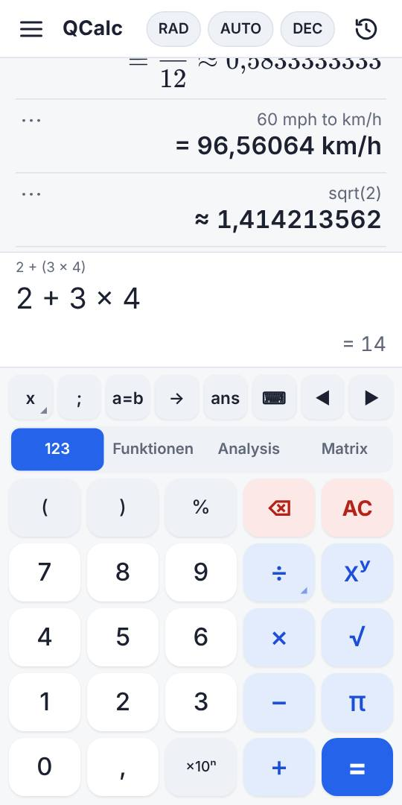
Auf einem Telefon mit großer Schrift ist die obere Tastenreihe (x, ans, Pfeile, ⌨) ausgeblendet. ⌨ am rechten Ende der Reiter zeigt sie an.
Grundrechnen
Einen Ausdruck eingeben
Was es kann Geben Sie einen Ausdruck so ein, wie ein Mathematikbuch ihn schreibt, mit den Tasten oder nach ⌨ mit der Tastatur des Telefons.
- Tippen Sie den Ausdruck mit den Ziffern- und Operatortasten. Klammern liegen auf den Tasten ( ).
- Eine Funktionstaste der Seite Funktionen (sin, log, √ und andere) schreibt „sin(“ und Ähnliches.
- Einheiten und Währungen schreiben Sie mit Namen (
5 km,100 USD). Umgerechnet wird mit „to“ (5 km to mi). - Drücken Sie =, um zu rechnen.
2^10 → = 1024, 5! → = 120, sin(30°) → = 1/2
÷ × + und Ähnliches in einem leeren Eingabefeld rechnen mit dem letzten Ergebnis „ans“ weiter.
- Klammern, die nicht paarweise stehen, führen zu einem Fehler. Die Meldung sagt, was zu korrigieren ist.
Das Ergebnis lesen: exakt, genähert, Brüche
Was es kann Ein Ergebnis mit „=“ ist exakt, eines mit „≈“ genähert. Ergebnisse mit Brüchen oder √ zeigen auch die Dezimalzahl, in der nächsten Zeile.
1/3 + 1/4→= 7/12, darunter≈ 0,583 333 333 333 333(der Bruch bleibt, mit Dezimalzahl)sqrt(8)→= 2√2, darunter≈ 2,828 427 124 746 1930!→= 265.252.859.812.191.058.636.308.480.000.000(ganze Zahlen bis 60 Stellen vollständig)2^200→≈ 1,606 938 044 258 99 × 10⁶⁰(eine sehr große Zahl)
- Der Schalter oben wechselt zwischen exakt, genähert und automatisch.
- Die Genauigkeit (Standard 15 Stellen) lässt sich mit dem Feld „15 St.“ in der Zeile oben ändern. Es bietet 10, 15, 20, 30, 50, 100 und Andere … (eine Zahl eingeben); das Ergebnis des Ausdrucks in der Eingabe wird sofort neu berechnet, die Ergebnisse im Verlauf bleiben, wie sie sind. Auch Genauigkeit (signifikante Stellen) in den Einstellungen ändert sie. Ergebnisse erscheinen mit Dreiergruppen (Zifferngruppierung (1,000) schaltet es aus).
- Um eine Zeile des Verlaufs mit mehr Stellen zu sehen, wählen Sie in ihrem ⋯ → Mit anderer Stellenzahl neu rechnen 30, 50, 100 oder Andere …. Das Ergebnis erscheint in einem Blatt mit Ausdruck ins Eingabefeld setzen, Im Verlauf behalten und Ergebnis kopieren. Die Genauigkeit der Einstellungen und die Zeile bleiben, wie sie sind.
Pro Dies ist eine Funktion von QCalc Pro. Bis 1000 Stellen kostenlos. Mehr als 1000, bis 200000 Stellen, ist eine Funktion von QCalc Pro.
Ein sehr langes Ergebnis lässt sich im Verlauf scrollen, sodass jede Stelle lesbar ist; beim Kopieren wird jede Stelle kopiert, ohne Zifferngruppierung.
- Unter der neuesten Antwort erscheinen Schaltflächen für das, was oft als Nächstes kommt (höchstens 6): bei einem Ausdruck in x Details · Graph · Faktorisieren · Ableitung · Integral · = 0 lösen; bei einer Zahl Details, Als Bruch, Wissenschaftlich (bei einer ganzen Zahl Primfaktoren, Hexadezimal); mit Einheit Umrechnen…; bei einer Matrix Determinante, Inverse, Eigenwerte, Transponierte. Die Rechnung einer Schaltfläche wird eine neue Zeile im Verlauf.
- Details (oder ⋯ → Details) zeigt die anderen Formen der Antwort zusammen: bei einer Zahl den exakten Wert, die Dezimalzahl, den Bruch, den gemischten Bruch und die wissenschaftliche Schreibweise (ganze Zahlen in den Basen 2, 8 und 16 und ihre Primfaktoren; mit Einheit andere Einheiten); bei einem Ausdruck in x einen kleinen Graphen, die Nullstellen, die Ableitung, das Integral, die Taylorreihe und die faktorisierte Form. Eine Zeile antippen für Ausdruck ins Eingabefeld, Im Verlauf behalten oder Ergebnis kopieren.
Ohne diese Schaltflächen: Einstellungen → Nächste Schritte unter der neuesten Antwort vorschlagen aus.
Löschen und rückgängig machen
Was es kann ⌫ löscht ein Zeichen, AC leert das Eingabefeld. Gleich danach holt Rückgängig über dem Eingabefeld es zurück.
- ⌫ löscht das Zeichen vor dem Cursor; gedrückt halten löscht weiter.
- AC leert das Eingabefeld, darüber erscheint Rückgängig.
- Rückgängig holt den Ausdruck zurück.
Eine aus dem Verlauf gelöschte Zeile lässt sich ebenfalls einige Sekunden lang mit Rückgängig unten am Bildschirm zurückholen.
Zahlenformat: das Dezimalzeichen
Was es kann Wählen Sie, ob das Dezimalzeichen „.“ oder „,“ ist und wie Ziffern gruppiert werden. Anfangs schreibt QCalc Zahlen wie die Region Ihres Telefons.
- Öffnen Sie die Einstellungen.
- Wählen Sie unter Zahlenformat Automatisch, 1,234.5, 1.234,5 oder 1 234,5.
- Eingabe und Anzeige folgen dem gewählten Format.
Bei 1.234,5 tippen Sie zweieinhalb als 2,5: 2,5 + 3,75 → = 6,25
Mit Dezimalkomma trennen Sie die Argumente einer Funktion mit „;“: max(1,5; 2).
1.5mit Dezimalkomma ergibt einen Fehler; die Meldung zeigt die richtige Schreibweise.
Verlauf und Speicher
Was es kann Ausdrücke und Ergebnisse bleiben im Verlauf, bis zu 300 Zeilen. 🕘 oben rechts sucht, summiert ausgewählte Zeilen, exportiert und löscht.
- Tippen Sie auf ein Ergebnis im Verlauf, um es ins Eingabefeld zu setzen (Ergebnis durch Tippen einfügen); ein Tippen auf den Ausdruck bearbeitet die Zeile (Eine Zeile des Verlaufs bearbeiten).
- ⋯ links an einer Zeile bietet ☆ Oben anheften und Kurze Notiz hinzufügen.
- 🕘 bietet Verlauf durchsuchen, Zeilen auswählen: Summe, Mittelwert, kopieren, Verlauf exportieren (CSV-Datei) und Ganzen Verlauf löschen.
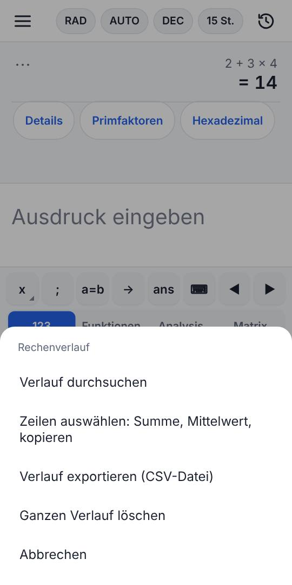
Mit Stern angeheftete Zeilen bleiben erhalten, wenn der Verlauf voll ist.
Ergebnis durch Tippen einfügen
Was es kann Ein Tippen auf ein Ergebnis im Verlauf setzt es an der Cursorposition ins Eingabefeld, so wie ein Klick auf eine Zelle, während Sie in einer Tabellenkalkulation eine Formel eingeben.
- Ist das Feld leer oder wurde gerade gerechnet, kommt das Ergebnis einfach hinein.
- Ein weiteres Tippen auf ein Ergebnis, bevor Sie etwas eingeben, ersetzt das zuvor angetippte.
- Nach einem Operator wie + oder × kommt das Ergebnis dahinter. Direkt nach einer Zahl, einem Buchstaben oder „)“ kommt zuerst ein sichtbares × dazu.
- Die im Ausdruck verwendeten Zeilen bekommen farbige Markierungen; wird das Ergebnis aus dem Feld gelöscht, verschwindet seine Markierung.
Tippen Sie auf die Zeile 120, drücken Sie ×, tippen Sie auf die Zeile 3 → im Feld steht 120 × 3, das Ergebnis ist = 360
Ergebnisse mit √ oder π kommen in ihrer exakten Form, nicht als gerundete Dezimalzahl: Das Ergebnis von sqrt(8) kommt als (2 × √(2)), sein Quadrat ist also = 8. Ein Ergebnis ohne exakte Form kommt mit allen Stellen der eingestellten Genauigkeit.
Um eine Zeile über ihre Nummer zu verwenden, wählen Sie „#12 einfügen“ in ihrem ⋯; zum Kopieren eines Ergebnisses Ergebnis kopieren im ⋯ (ohne Zifferngruppierung kopiert).
Eine Zeile des Verlaufs bearbeiten
Was es kann Tippen Sie auf den Ausdruck einer Zeile (den kleinen über dem Ergebnis) oder auf Ausdruck bearbeiten in ihrem ⋯, um die Zeile zu bearbeiten. Der Ausdruck kommt ins Eingabefeld, darüber erscheint das Band „Eine Zeile des Verlaufs wird bearbeitet“. Der Verlauf scrollt so, dass die Zeile und ihr Ergebnis sichtbar bleiben.
- Ändern Sie den Ausdruck und drücken Sie =. Die Zeile bekommt an derselben Stelle den neuen Ausdruck und das neue Ergebnis. ★ und die kurze Notiz bleiben; das Menü ⋯ zeigt neben der Zeit der Zeile die Zeit der Änderung.
- Einige Sekunden lang erscheinen „Bearbeitet“ und Rückgängig. Rückgängig stellt Ausdruck und Ergebnis wieder her.
- Wenn Zeilen darunter das Ergebnis dieser Zeile (ans oder #12) oder eine hier definierte Variable verwenden, fragt die App, ob sie neu berechnet werden sollen („Auch die 2 Zeilen darunter“) oder Nur diese Zeile. Neu berechnete Zeilen leuchten kurz auf, und Rückgängig nimmt auch sie zurück. Bei Nur diese Zeile bekommen die Zeilen darunter einen Hinweis, dass ihr Ergebnis veraltet sein kann. Abbrechen ändert nichts: Der neue Ausdruck bleibt im Feld, und Sie bearbeiten weiter.
- Um stattdessen eine neue Zeile darunter zu rechnen, drücken Sie Als neue Zeile im Band und dann =. ✕ im Band, AC oder die Zurück-Taste beendet das Bearbeiten, ohne etwas zu ändern.
Eine Zeile behält die Winkeleinheit (Grad, Bogenmaß), mit der sie berechnet wurde. Beim Bearbeiten, beim Neuberechnen der Zeilen darunter und mit anderen Stellen wird diese Einheit verwendet, und das Band sagt es. Zeilen von vor 1.16 verwenden die jetzt eingestellte Einheit; bei einer Winkelfunktion sagt das Band es.
Die anderen Einstellungen (Zahlensystem und Ähnliches) sind die von jetzt. Eine Zeile aus einem anderen Zahlensystem sagt das im Band und bekommt das Zahlensystem von jetzt.
Wird die bearbeitete Zeile gelöscht oder der ganze Verlauf geleert, endet das Bearbeiten; der Ausdruck im Feld wird dann als neue Zeile gerechnet.
Ein Tippen auf das Ergebnis einer Zeile setzt es ins Eingabefeld (Ergebnis durch Tippen einfügen).
Zeilennummern und #12
Was es kann Jede Zeile des Verlaufs hat eine Nummer (das kleine „#12“ unter ihrem ⋯). #12 in einem Ausdruck ist das Ergebnis von Zeile 12, wie ein Bezug auf eine Zelle in einer Tabellenkalkulation.
- Wählen Sie „#12 einfügen (diese Zeile über ihre Nummer)“ im ⋯ einer Zeile:
#12kommt ins Eingabefeld.#und die Nummer einzutippen geht auch. - Während Sie tippen, erscheint das Ergebnis mit
#12unter dem Eingabefeld. - Eine Nummer gehört zu ihrer Zeile: Das Löschen anderer Zeilen ändert sie nicht, und keine Nummer wird zweimal vergeben.
- Wird Zeile 12 bearbeitet, fragt die App, ob die Zeilen darunter, die
#12verwenden, neu berechnet werden sollen (Eine Zeile des Verlaufs bearbeiten).
Zeile 12 ist = 250 und Zeile 13 ist = 3: #12 × #13 → = 750
- Die Nummer einer gelöschten Zeile oder einer Zeile unter der gerade bearbeiteten lässt sich nicht verwenden; eine Meldung sagt es. Wird eine verwendete Zeile gelöscht, sagt es ein Hinweis unter der Zeile.
Es ist dieselbe Schreibweise wie #3 in den Notizen (Zeilennummern und #3).
Anheften, Notizen und Suche
- Wählen Sie ☆ Oben anheften im ⋯ einer Zeile: Sie rückt zu den anderen angehefteten Zeilen nach oben.
- Wählen Sie Kurze Notiz hinzufügen im ⋯ und schreiben Sie eine kurze Notiz. Sie erscheint über dem Ausdruck.
- In 🕘 zeigt Verlauf durchsuchen nur die Zeilen, deren Ausdruck, Ergebnis oder Notiz die eingegebenen Wörter enthält.
Eine Zeile mit der Notiz „Miete“ findet die Suche nach „Miete“.
Zeilen addieren
- Wählen Sie Zeilen auswählen: Summe, Mittelwert, kopieren in 🕘. Auswählen: Summe und Mittelwert im ⋯ einer Zeile beginnt mit dieser Zeile ausgewählt und zeigt sofort die Summe.
- Tippen Sie auf die Zeilen, die addiert werden sollen. Langes Drücken auf eine Zeile wählt alle Zeilen von der zuletzt gewählten bis zu ihr.
- Summe und Mittelwert erscheinen unten, mit Einheit, wenn die Einheiten passen. Als Dezimalzahl angezeigte Zeilen ergeben eine Dezimalzahl. Kopieren kopiert die Zeilen (ohne Zifferngruppierung).
- Als Tabelle kopieren kopiert Ausdrücke und Ergebnisse der gewählten Zeilen in zwei Spalten mit einem Tabulator dazwischen: In eine Tabellenkalkulation eingefügt, ergeben sie eine Spalte der Ausdrücke und eine Spalte der Ergebnisse.
Als Tabelle kopieren ist kostenlos. Den ganzen Verlauf als CSV-Datei zu speichern (Den Verlauf exportieren) ist eine Funktion von QCalc Pro.
- Zeilen mit verschiedenen Einheiten (m und kg) lassen sich nicht addieren; der Grund wird angezeigt.
Den Verlauf exportieren (CSV)
Pro Dies ist eine Funktion von QCalc Pro.
Was es kann Speichert den Verlauf als CSV-Datei, die Tabellenkalkulationen öffnen können.
- Wählen Sie Verlauf exportieren (CSV-Datei) in 🕘.
- Wählen Sie im Speichern-Bildschirm von Android den Ort.
Um nur die gewählten Zeilen in eine Tabellenkalkulation einzufügen, verwenden Sie Als Tabelle kopieren (Zeilen addieren).
Speichertasten (M+ M− MR MC)
Was es kann Die Speichertasten eines Taschenrechners. Der Wert wird in seiner exakten Form gespeichert.
- Öffnen Sie Weitere Einstellungen in den Einstellungen und schalten Sie Speichertasten anzeigen (M+ M− MR MC) ein.
- Bei einem angezeigten Ergebnis addiert M+ es zum Speicher, M− zieht es ab.
- MR setzt den Speicher ins Eingabefeld, MC löscht ihn.
Tasten und Eingabehilfen
Die vier Tastenseiten
Was es kann Die Tasten liegen auf vier Seiten, die mit den Reitern darüber gewechselt werden.
| Seite | Wichtigste Tasten |
|---|---|
| 123 | Ziffern, + − × ÷, Klammern, %, ^, √ |
| Funktionen | sin, cos, tan, log, ln, Betrag, Fakultät und mehr |
| Analysis | Ableitung d/dx, Integral ∫, Grenzwert lim, Summe Σ, Produkt Π, Gleichungen |
| Matrix | Matrix ▦, Determinante det, Transponierte, Inverse |
Wenn Sie den Namen einer Funktion nicht kennen, suchen Sie in Listen: Funktionen, Einheiten, Konstanten (Listen).
Kästchen □ (die Formulare)
Was es kann Die Tasten für Integral und Grenzwert öffnen ein Formular mit Kästchen □. Kästchen ausfüllen, und der Ausdruck ist fertig.
- Drücken Sie ∫ auf der Seite Analysis.
- Tippen Sie Funktion, untere und obere Grenze. Nächstes Feld ▶ springt zum nächsten Kästchen.
- Das Ergebnis erscheint darunter. = legt es im Verlauf ab.
Das ⋯ des Formulars enthält Alle Felder leeren und So nutzen Sie dieses Formular ›.
Vorschläge
Was es kann Beim Tippen erscheinen Vorschläge unter dem Eingabefeld: nach „to“ die Zieleinheiten, mit der Tastatur die Namen von Funktionen und Einheiten.
- Tippen Sie
5 km to: mi, m, ft und andere werden vorgeschlagen. - Tippen Sie auf einen Vorschlag, um ihn einzufügen.
Hinweise zu den Argumenten
Was es kann Nach einem Funktionsnamen und „(“ erscheinen dort, wo die Vorschläge stehen (unter dem Eingabefeld, über den Tasten), die Argumente, was die Funktion tut und ein Beispiel. Das Argument, das Sie gerade eingeben, ist fett.
- Tippen Sie
round(: „round(Wert, [Nachkommastellen])“ erscheint, der Wert fett. - Nach dem Trennzeichen ist das nächste Argument (die Nachkommastellen) fett. Ein Argument in [ ] kann wegfallen.
- ✕ rechts schließt den Hinweis dieser Funktion. Argumente einer Funktion beim Tippen zeigen in den Einstellungen schaltet die Hinweise aus.
round(3.14159, 2) → 3,14 (wie im Beispiel des Hinweises)
Etwa 60 Funktionen haben Hinweise: Trigonometrie, Logarithmen, Wurzeln, Runden, Reste, größter gemeinsamer Teiler, Summen, Ableitungen, Integrale, Grenzwerte, Gleichungen, Taylorreihen, Matrizen, Statistik und Verteilungen. Ein Hinweis liest nur das Eingabefeld und ändert den Ausdruck nie.
Funktionen, Einheiten und Währungen schreiben
Was es kann Ausdrücke werden wie in Qalculate! geschrieben. Die üblichen Schreibweisen:
| Schreibweise | Bedeutung |
|---|---|
sqrt(x), √x | Quadratwurzel |
x^2 | Potenz |
5 km to mi | Einheit umrechnen |
100 USD to EUR | Währung umrechnen (mit den Wechselkursen) |
solve(x^2 − 5x + 6 = 0) | Gleichung lösen |
diff(x^3) | Ableitung |
integrate(x^2; 0; 1) | Bestimmtes Integral (mit Dezimalkomma Argumente mit „;“ trennen) |
ans | Das letzte Ergebnis |
Zehn traditionelle japanische Einheiten (tsubo, shaku, shō, kan und andere) funktionieren auch: 30 tsubo to m^2.
Listen: Funktionen, Einheiten, Konstanten, eigene Definitionen
Was es kann Listen: Funktionen, Einheiten, Konstanten im Menü hat vier Reiter: Funktionen, Einheiten und Währungen, Variablen und Konstanten sowie Ihre eigenen Definitionen, jeweils mit Suche.
- Öffnen Sie Listen: Funktionen, Einheiten, Konstanten über ☰.
- Wählen Sie einen Reiter und tippen Sie einen Teil eines Namens in das Feld oben.
- Tippen Sie auf einen Eintrag, um die Beschreibung zu lesen; Einfügen setzt ihn ins Eingabefeld.
Der Reiter der eigenen Definitionen ist die Liste Ihrer Variablen und Funktionen (Eigene Variablen und Funktionen). Mit den Feldern unten gespeicherte Variablen (r = 5 cm) und Funktionen bleiben für das nächste Mal erhalten.
Eigene Variablen und Funktionen
Was es kann Die Variablen, die Sie mit k := 2 oder r = 5 cm festlegen, und die Funktionen, die Sie mit f(x) := x^2 + 1 festlegen, mit ihren Werten auf einem Bildschirm. Sobald es mindestens eine gibt, steht über dem Eingabefeld eine Schaltfläche wie Variablen 2 (die Zahl der Variablen und Funktionen).
- Drücken Sie die Schaltfläche Variablen über dem Eingabefeld. Der Reiter Eigene von Listen: Funktionen, Einheiten, Konstanten im Menü ist derselbe Bildschirm.
- Die Variablen stehen oben, mit ihren Werten. Eine Variable mit einem Ausdruck zeigt auch den ausgerechneten Wert (w = 3 k = 6).
- Tippen Sie auf einen Namen, um ihn ins Eingabefeld zu setzen (eine Funktion mit dem Cursor zwischen den Klammern).
- ⋯ rechts: Wert ändern (Ausdruck ändern bei einer Funktion), Umbenennen oder Löschen. Alles lässt sich gleich danach mit Rückgängig zurücknehmen.
k := 2 → Variablen → ⋯ von k → Wert ändern → 3. Jetzt ist k + 1 gleich 4.
Was := oder = festlegt, ist als „vorübergehend“ markiert und verschwindet, wenn die App geschlossen wird. Was Sie mit Variable speichern in den Feldern unten speichern, bleibt. Eine Änderung des Werts oder des Namens ändert daran nichts.
Die Namen in den Rechennotizen (Miete = 850 EUR) gelten nur in ihrer Notiz und sind keine Variablen des Rechners. Sie stehen unten, nach Notizen geordnet; ein Tippen öffnet die Notiz an dieser Zeile.
- Einen Namen, den QCalc schon verwendet (m für den Meter, pi …), können Sie nicht vergeben: Wählen Sie einen anderen.
Währungen und Wechselkurse
Was es kann Währungen werden wie 100 USD to EUR umgerechnet. Die Wechselkurse werden beim Öffnen der App von selbst aktualisiert (beim Start oder wenn Sie zur App zurückkehren; eine Internetverbindung ist nötig). Beim Roaming im Ausland und im Datensparmodus geschieht das nicht von selbst; drücken Sie bei Bedarf Jetzt aktualisieren.
- Zum sofortigen Aktualisieren drücken Sie Wechselkurse jetzt aktualisieren in den Einstellungen.
- Der Zeitpunkt der letzten Aktualisierung steht in derselben Zeile.
- Ohne Internet lassen sich die Kurse nicht aktualisieren; es gelten die zuletzt geladenen.
Die Preise von Bitcoin (BTC) und von Gold (XAU), Silber (XAG), Platin (XPT) und Palladium (XPD) werden zusammen mit den Wechselkursen aktualisiert.
Die Kurse werden auf dem Gerät gespeichert, sodass Sie auch ohne Internet mit den zuletzt geladenen Kursen umrechnen können. Öffnen Sie die App am besten einmal vor einer Reise.
Die physikalischen Konstanten sind die Werte von CODATA 2022, die im Rechenkern enthalten sind; sie werden nicht aus dem Internet geholt. Neue empfohlene Werte kommen mit Updates der App.
Werkzeuge
Ein Werkzeug finden
Was es kann Werkzeuge im Menü enthält die Alltagswerkzeuge und die für Formen, Volumen und Daten. Suchen Sie nach dem, was Sie tun möchten.
- „?“: öffnet diese Anleitung beim Werkzeug
- Beispiele: ein Tippen füllt sie aus
- Felder: Zahlen eingeben (eine graue Zahl ist ein Beispiel)
- Ergebnisse: ein Tippen übernimmt den Ausdruck ins Eingabefeld, legt das Ergebnis im Verlauf ab oder kopiert es
- Ein Hinweis (Werkzeuge für Geld oder Sicherheit)
- Eine Zeile Erklärung
- Öffnen Sie Werkzeuge über ☰.
- Tippen Sie oben ein, was Sie tun möchten, etwa „Kredit“, „Tank“ oder „Mittelwert“.
- Tippen Sie auf das Werkzeug.
- Tippen Sie auf ein Beispiel oder geben Sie die Zahlen ein. Das Ergebnis erscheint sofort.
Zuletzt genutzte Werkzeuge stehen oben. QCalc schnell öffnen ganz unten fügt das Widget oder die Kachel hinzu.
Preis: Rabatt und Steuer
Was es kann Der Preis mit oder ohne Steuer, ein oder zwei Rabatte, und wie gerundet wird.
- Öffnen Sie Preis: Rabatt und Steuer in den Werkzeuge.
- Geben Sie Preis, Rabatt (%) und Steuersatz ein.
- Wählen Sie, ob der Preis die Steuer enthält, und wie gerundet wird.
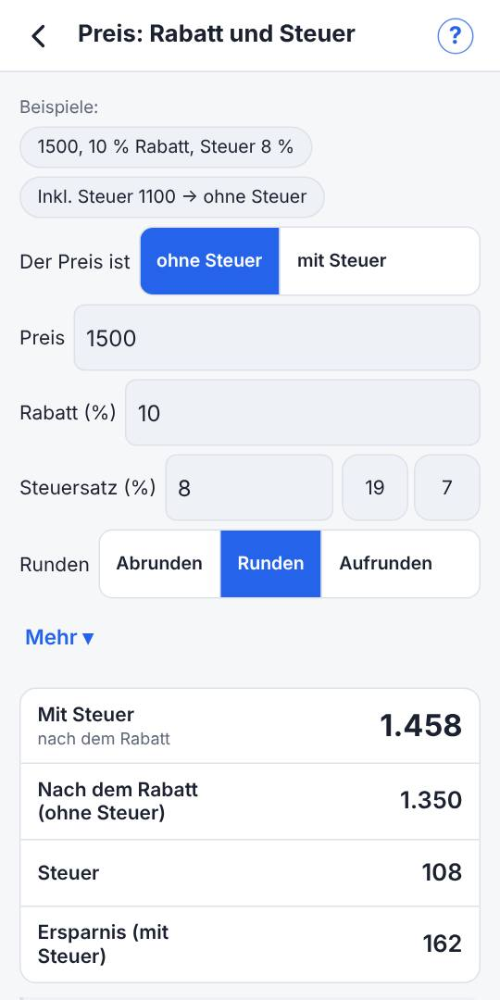
1500 mit 10 % Rabatt und 8 % Steuer → 1.458 mit Steuer (1.350 ohne Steuer, Steuer 108)
- Um den Preis ohne Steuer aus einem Preis mit Steuer zu finden, wählen Sie zuerst „mit Steuer“.
Prozente
Was es kann A ist wie viel Prozent von B, und die Änderung von A nach B in Prozent.
- Öffnen Sie Prozente und wählen Sie die Rechnung.
- Geben Sie A und B ein.
30 von 120 → 25 %. Von 80 auf 100 → plus 25 %
Grundpreis: was ist günstiger
Was es kann Vergleicht den Preis pro 100 g (100 mL, Stück) zweier Produkte.
- Öffnen Sie Grundpreis: was ist günstiger.
- Geben Sie Preis und Menge (500 g, 1 kg) von A und B ein.
298 für 500 g und 498 für 1 kg → B ist günstiger (59,6 und 49,8 pro 100 g, 16,4 % weniger)
Rechnung teilen
Was es kann Der Anteil jeder Person, gerundet wie gewählt.
- Öffnen Sie Rechnung teilen und geben Sie Gesamtbetrag und Personenzahl ein.
- Wählen Sie Auf- oder Abrunden.
10000 für 3 → je 3.333,34 (aufgerundet; 0,02 zu viel)
Kredit
Was es kann Monatliche Rate, Zinsen insgesamt und Tilgungsplan, mit gleichen Raten oder gleicher Tilgung.
- Öffnen Sie Kredit.
- Geben Sie Betrag, Jahreszins und Jahre ein.
- Wählen Sie die Art der Rückzahlung.
- Öffnen Sie Raten, Monat für Monat für den Plan.
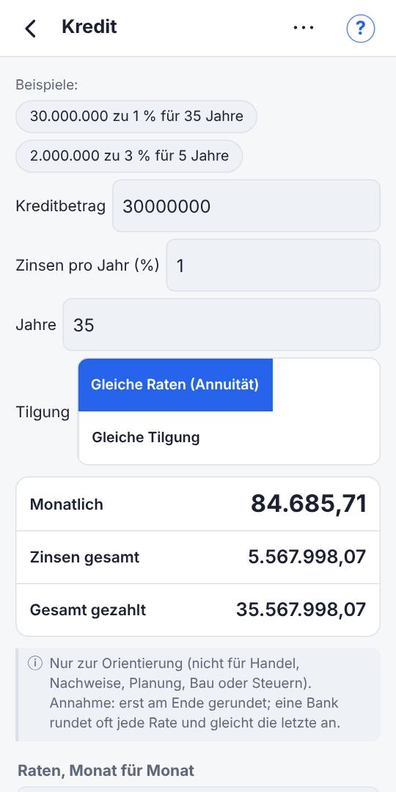
30.000.000 zu 1 % über 35 Jahre (gleiche Raten) → 84.685,71 im Monat, Zinsen insgesamt 5.567.998,07
Pro Dies ist eine Funktion von QCalc Pro. Den Plan als CSV-Datei zu speichern ist eine Funktion von QCalc Pro (Anzeigen und Kopieren sind kostenlos).
- 0,01 statt 1 % ergibt 0,01 %. Geben Sie die Prozentzahl ein.
Sparen und Zinseszins
Was es kann Was eine monatliche Sparrate oder ein Betrag mit Zinseszins wird.
- Öffnen Sie Sparen und Zinseszins und geben Sie Monatsbetrag (oder Anfangsbetrag), Jahreszins und Jahre ein.
30.000 im Monat, 3 %, 20 Jahre → 9.849.059,94 (eingezahlt 7.200.000; Zinsen 2.649.059,94)
Aktien und Anlage
Was es kann Gewinn und Verlust mit Steuer, durchschnittlicher Einstandskurs, Erhaltungsquote eines Margin-Kontos und Nachschuss, Positionsgröße aus dem Stop, Rendite, KGV, KBV und Zinseszins, Sollzinsen und Leihgebühr sowie ausländische Aktien in Ihrer Währung. Es werden keine Kurse abgerufen: alles kommt aus den eingegebenen Zahlen.
- Wählen Sie in Werkzeuge ein Werkzeug unter Aktien und Anlage.
- Tippen Sie auf ein Beispiel oder geben Sie die Zahlen ein. Die Ergebnisse erscheinen sofort.
- Tippen Sie auf ein Ergebnis, um seinen Ausdruck ins Eingabefeld zu setzen, ihn im Verlauf zu behalten oder zu kopieren. ⋯ oben rechts ändert die angezeigten Stellen.
Eine Rechnung zur Orientierung, keine Anlageberatung. Broker rechnen Steuer und Margin unterschiedlich.
Pro Dies ist eine Funktion von QCalc Pro. Erhaltungsquote und Nachschuss, Positionsgröße aus dem Stop sowie Zinsen und Leihgebühr je Tag sind Funktionen von QCalc Pro. Gewinn und Verlust, Einstandskurs, Rendite/KGV/KBV/Wachstum und ausländische Aktien sind kostenlos.
Aktien: Gewinn und Verlust
Was es kann Aus Kauf- und Verkaufskurs, Aktien und Gebühren beim Kauf und Verkauf: Gewinn oder Verlust, in %, die Steuer, nach Steuern, den Verkaufserlös und die Gewinnschwelle.
- Öffnen Sie Aktien: Gewinn und Verlust und geben Sie die Kurse und die Aktien ein.
- Eine Gebühr kann ein Betrag (500) oder ein Anteil des Handels (0,1%) sein.
- Wählen Sie Steuerpflichtig oder Steuerfreies Konto. Der Steuersatz ist 20,315 % (der japanische), wenn Sie keinen anderen eingeben.
Gekauft zu 1000, verkauft zu 1200, 100 Aktien, ohne Gebühren → +20.000,00, Steuer 4.063,00, nach Steuern +15.937,00
Der %-Wert bezieht sich auf den gezahlten Betrag mit Gebühr. Die Gewinnschwelle ist der Kurs, bei dem nach den Gebühren kein Verlust bleibt.
Die Steuer wird nur für diesen Handel berechnet. Bei 20,315 % werden die Einkommensteuern (15,315 %) und die Einwohnersteuer (5 %) je für sich abgerundet und addiert, wie ein Broker sie einbehält (ein Gewinn von 19 Yen zahlt 2). Verlustverrechnung im Jahr wird nicht berücksichtigt.
Durchschnittlicher Einstandskurs
Was es kann Der Durchschnittskurs von Aktien aus mehreren Käufen, und wie viele Aktien zu welchem Kurs den Durchschnitt auf ein Ziel bringen.
- Öffnen Sie Durchschnittlicher Einstandskurs und wählen Sie Durchschnitt der Käufe oder Ziel-Durchschnitt erreichen.
- Durchschnitt der Käufe: ein Kauf je Zeile, „Kurs Aktien“ (zum Beispiel 1000 100).
- Ziel-Durchschnitt: gehaltene Aktien, ihren Durchschnitt und das Ziel eingeben, dann den Kaufkurs oder die Aktien.
100 zu 1000 und 200 zu 900 → Durchschnitt 933,33 (300 Aktien, 280.000,00)
100 zu durchschnittlich 1200 → mit 200 Aktien zu 900 wird der Durchschnitt 1000
- Durchschnitt = (Kurs × Aktien + …) / alle Aktien
- Aktien für ein Ziel T = N × (A − T) / (T − P) (N: gehaltene Aktien, A: ihr Durchschnitt, P: Kaufkurs; auf die Handelseinheit aufgerundet)
Die Handelseinheit ist 100 Aktien, wenn Sie keine andere eingeben; für Aktien, die einzeln gehandelt werden, geben Sie 1 ein.
Margin: Erhaltungsquote
Was es kann Aus Sicherheit und Position: die Erhaltungsquote und der Kurs, bei dem sie auf die Nachschusslinie fällt.
- Öffnen Sie Margin: Erhaltungsquote und geben Sie die Bareinlage und, falls vorhanden, Aktien als Sicherheit (nach Abschlag) ein.
- Wählen Sie Gekauft oder Leerverkauft und geben Sie Einstiegskurs, Aktien und aktuellen Kurs ein. Kosten (Zinsen, Gebühren) können auch eingegeben werden.
- Die Nachschusslinie ist 20 %, wenn Sie keine andere eingeben.
1.000.000 bar, 3.000 Aktien zu 1000 gekauft, jetzt 900 → 23,33 %, Nachschuss bei 866,67 (−3,70 % vom aktuellen Kurs)
Die Formeln:
- Quote = (Bareinlage + Aktien als Sicherheit + Gewinn oder Verlust − Kosten) / Wert der Positionen × 100
- Wert der Positionen = Einstiegskurs × Aktien (unter Mehr ▾ lassen sich andere Positionen mit ihrem Gewinn oder Verlust hinzufügen)
- Gewinn oder Verlust: Kauf (aktuell − Einstieg) × Aktien, Leerverkauf (Einstieg − aktuell) × Aktien. Ein Buchgewinn zählt nur, wenn unter Mehr ▾, Buchgewinne gewählt
- Nachschusskurs: Kauf Einstieg − (Bareinlage + Aktien als Sicherheit − Kosten − Linie × Wert) / Aktien; Leerverkauf Einstieg + (dasselbe) / Aktien
Broker zählen Buchgewinne, Abschläge und Kosten unterschiedlich und prüfen zu unterschiedlichen Zeiten (meist zum Schluss).
Pro Dies ist eine Funktion von QCalc Pro.
Positionsgröße aus dem Stop
Was es kann Aus Kapital, dem erlaubten Verlust je Trade (% des Kapitals), Einstieg und Stop: die Aktien (auf die Handelseinheit abgerundet) und der Verlust am Stop. Mit einem Gewinnziel auch das Chance-Risiko-Verhältnis.
- Öffnen Sie Positionsgröße aus dem Stop und geben Sie Kapital, Risiko, Einstieg und Stop ein.
- Ein Stop unter dem Einstieg ist ein Kauf, darüber ein Leerverkauf.
Kapital 3.000.000, 1 %, Kauf zu 1000, Stop 950 (Einheit 100) → 600 Aktien, Verlust am Stop 30.000,00; Gewinnziel 1150: Chance-Risiko 1 : 3,00
- Aktien = Kapital × Risiko % / |Einstieg − Stop| (auf die Handelseinheit abgerundet)
- Chance-Risiko = 1 : |Gewinnziel − Einstieg| / |Einstieg − Stop|
Pro Dies ist eine Funktion von QCalc Pro.
Rendite, KGV, KBV, Wachstum
Was es kann Dividendenrendite, KGV, KBV und ROE; Zinseszins mit monatlichem Sparen; das jährliche Wachstum zwischen zwei Werten.
- Öffnen Sie Rendite, KGV, KBV, Wachstum, wählen Sie, was gesucht ist, und geben Sie die Zahlen ein.
Kurs 2000, Dividende 60, EPS 150, BPS 1600 → Rendite 3,00 %, KGV 13,33 ×, KBV 1,25 ×, ROE 9,38 %
1.000.000 → 1.800.000 in 6 Jahren → +10,29 % im Jahr
Die Verzinsung kann jährlich oder monatlich sein; jährlich wächst ein Monat um (1 + Jahresrendite)^(1/12).
Sollzinsen und Leihgebühr
Was es kann Die Zinsen auf einen Margin-Kauf oder die Leihgebühr eines Leerverkaufs, je Tag.
- Öffnen Sie Sollzinsen und Leihgebühr und geben Sie den Wert der Position, den Jahressatz und die Tage ein.
- Wählen Sie die Tage im Jahr (365 oder 360).
3.000.000 zu 2,8 % für 30 Tage → 6.904,10 (230,14 pro Tag)
- Kosten = Wert × Jahressatz × Tage / Tage im Jahr (abgerundet)
Pro Dies ist eine Funktion von QCalc Pro.
Ausländische Aktien in Ihrer Währung
Was es kann Der Wert einer ausländischen Aktie in Ihrer Währung, mit den Wechselkursen der App oder einem eingegebenen Kurs; mit Kaufkurs und damaligem Wechselkurs der Gewinn oder Verlust, aufgeteilt in Kurs- und Wechselkursanteil.
- Öffnen Sie Ausländische Aktien in Ihrer Währung und geben Sie die Währung (zum Beispiel USD), den aktuellen Kurs und die Aktien ein.
- Ohne eingegebenen Kurs werden die Wechselkurse der App verwendet (wie in Einheiten und Währungen umrechnen).
10 Aktien zu 150, Kurs 155; gekauft zu 120 bei einem Kurs von 140 → Wert 232.500,00, Gewinn +64.500,00 (+42.000,00 aus dem Kurs, +22.500,00 aus dem Wechselkurs)
Daten
Was es kann Die Tage zwischen zwei Daten, n Tage danach oder davor, ein Alter, der Wochentag.
- Öffnen Sie Datumsangaben und wählen Sie die Rechnung.
- Geben Sie die Daten und die Tage ein.
100 Tage ab heute → das Datum und sein Wochentag
Zeiten
Was es kann Addiert und subtrahiert h:mm und gibt die Arbeitszeit ohne Pausen und den Lohn.
- Öffnen Sie Zeiten und geben Sie Beginn, Ende und Pause ein.
- Mit dem Stundenlohn erhalten Sie den Lohn.
9:00 bis 17:30 mit 1:00 Pause → 7:30 gearbeitet (7,5 Stunden)
Einheiten und Währungen umrechnen
Was es kann Geben Sie in einer von zwei Zeilen eine Zahl ein; die andere rechnet um. Länge, Gewicht, Volumen, Temperatur, Verbrauch, Währungen und mehr.
- Öffnen Sie Einheiten und Währungen umrechnen und wählen Sie die Größe mit den Chips oben.
- Wählen Sie die Einheiten der beiden Zeilen.
- Geben Sie in einer Zeile eine Zahl ein.
- ⇅ tauscht die Zeilen.
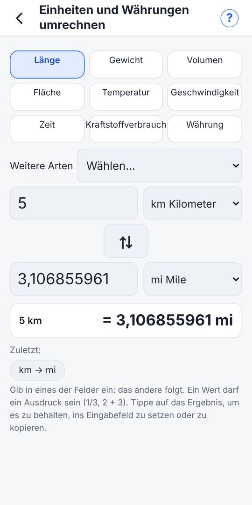
5 km → 3,106856 mi
Tippen Sie auf die Ergebniszeile, um „5 km to mi“ ins Eingabefeld zu setzen oder im Verlauf abzulegen.
Selten genutzte Einheiten (Planck-Einheiten, atomare Einheiten, alte französische Maße und Ähnliches) stehen nicht in den Listen; im Eingabefeld getippt, funktionieren sie weiterhin.
Formen: Fläche, Volumen, Länge
Was es kann Wählen Sie eine Form nach ihrem Bild und geben Sie die Maße ein: Fläche, Umfang, Volumen und Oberfläche erscheinen.
- Öffnen Sie Ebene Figuren oder Körper in den Werkzeuge.
- Tippen Sie auf das Bild einer Form.
- Geben Sie die im Bild genannten Maße ein (r, h). Runde Maße als Radius oder Durchmesser.
- Die Ergebnisse ändern sich beim Tippen; ein Tippen übernimmt oder kopiert den Ausdruck.
Kugel mit Radius 2 → Volumen 32π/3 ≈ 33,5103, Oberfläche 16π
Das Gewicht steht in der letzten Zeile der Ergebnisse (Volumen × Dichte). Wählen Sie gleich darunter unter Material (Dichte) ein Material oder geben Sie mit Andere Dichte … eine Dichte ein. Haben die Längen keine Einheit, steht dort „Erscheint, wenn die Längen eine Einheit haben“: Tippen Sie darauf und wählen Sie eine Einheit. Wie die anderen Zeilen lässt sich das Gewicht antippen, um den Ausdruck in die Eingabe zu setzen oder ihn zu kopieren.
⟳ 3D oben links am Bild zeigt den Körper in 3D zum Drehen (Körper und Tanks in 3D).
Tanks: Füllmenge und Füllhöhe
Was es kann Die Flüssigkeitsmenge in einem liegenden oder stehenden Tank oder einem runden Behälter aus der Füllhöhe, und die Höhe zu einer Menge.
- Öffnen Sie Behälter: Füllmenge und Füllhöhe in den Werkzeuge.
- Wählen Sie die Form und geben Sie Durchmesser (oder Radius) und Länge ein.
- Geben Sie die Füllhöhe ein und wählen Sie die Längeneinheit.
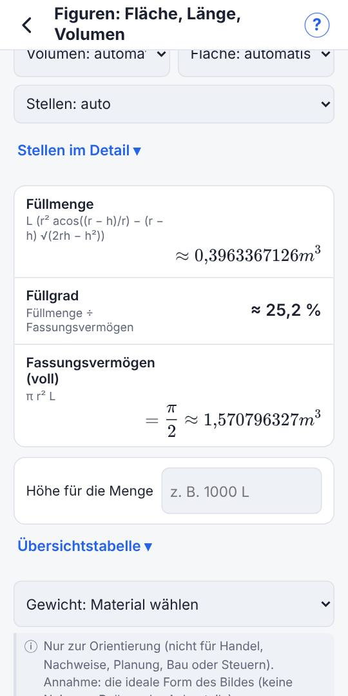
Liegend, Durchmesser 1 m, Länge 2 m, Füllhöhe 30 cm → 0,396337 m³ (etwa 396 L)
Übersichtstabelle ▾ listet die Menge zu jeder Höhe.
- Ein Radius im Feld für den Durchmesser ergibt etwa ein Viertel der Menge. Prüfen Sie Radius oder Durchmesser.
Wählen Sie ein Material (Wasser, Meerwasser, Kerosin, Benzin und andere): Das Gewicht der Flüssigkeit steht in der letzten Zeile der Ergebnisse (Flüssigkeit × Dichte).
Tankböden und Tabellen
Pro Dies ist eine Funktion von QCalc Pro.
Was es kann Bezieht die Böden an beiden Enden eines Tanks (halbkugelförmig, halbelliptisch 2:1, gewölbt) in Füllmenge und Gesamtvolumen ein, mit einer Tabelle der Menge zu jeder Höhe.
- Wählen Sie in Behälter: Füllmenge und Füllhöhe einen liegenden oder stehenden Zylinder.
- Wählen Sie Halbkugel oder Halbelliptisch 2:1 unter Böden; gewölbte Böden stehen unter Andere Böden ▾.
- L ist die Länge des Mantels (ohne Böden).
- Geben Sie unter Übersichtstabelle ▾ die Schrittweite ein: eine Tabelle aus Höhen und Mengen, zum Kopieren oder als CSV.
Flache Böden (ein einfacher Zylinder wie bisher) sind kostenlos.
Körper und Tanks in 3D
Pro Dies ist eine Funktion von QCalc Pro.
Was es kann Die Form aus Körper oder Behälter mit den eingegebenen Maßen in 3D zum Drehen. Darüber groß das Volumen und die Oberfläche des Werkzeugs (bei einem Tank die Füllmenge und das Fassungsvermögen).
- Wählen Sie in Körper oder Behälter der Werkzeuge eine Form und geben Sie die Maße ein.
- Tippen Sie oben links am Bild auf ⟳ 3D (vorgelesen als In 3D ansehen). Die Form wächst in 3D.
- Mit einem Finger in jede Richtung drehen (auch über oben und unten hinaus). Mit zwei Fingern: auseinander oder zusammen zum Zoomen, gemeinsam ziehen zum Verschieben, verdrehen zum Drehen im Bild. Ein Rotationskörper zeigt mit Halbieren seinen Schnitt.
- Mit der Würfel-Schaltfläche wählen Sie sofort Von vorn, Von oben oder Von der Seite. ⟲ stellt die erste Ansicht und Größe wieder her.
- ← Zurück zur Figur führt mit derselben Form und denselben Maßen zum Werkzeug zurück.
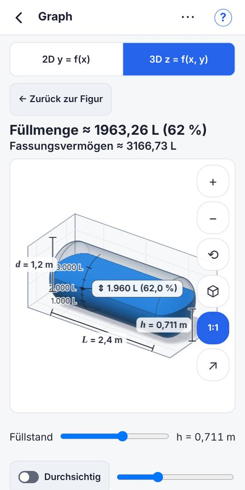
Ein Zylinder mit 30 cm Durchmesser und 50 cm Höhe → Volumen 11.250π ≈ 35.342,9 cm³
Ein Tank wird wie klares Glas gezeichnet, die Flüssigkeit als Körper, der wie sie aussieht (Wasser, Meerwasser, Petroleum oder Benzin; bei anderer Wahl in der Farbe der App). Ziehen Sie vom Füllstand (dem Kästchen mit der Menge) nach oben oder unten, um ihn zu bewegen: Füllhöhe im Werkzeug ändert sich mit. Ein Ziehen an anderer Stelle dreht den Graphen. Auch der Regler Füllstand darunter bewegt ihn.
Ein Körper wird im Aussehen des für sein Gewicht gewählten Materials gezeichnet (Material (Dichte): Eisen, Edelstahl, Aluminium, Kupfer, Messing, Holz, PLA, ABS, Acryl und andere); ohne Wahl in Blau. Durchsichtig und die Schaltflächen darunter gibt es auch hier (3D-Graph).
Die Striche an der Wand sind runde Mengen: Bei einem liegenden oder kugelförmigen Tank sind ihre Abstände sichtbar ungleich.
Die Zahlen am Füllstand sind zum Ablesen gerundet (3 signifikante Stellen, % mit einer Nachkommastelle); die genauen Werte stehen über dem Graphen und im Werkzeug (Angezeigte Stellen je Werkzeug).
Ohne QCalc Pro erscheint direkt über den Ergebnissen die Zeile In 3D drehen (QCalc Pro).
Volumen aus Messwerten
Was es kann Das Volumen von Erdarbeiten oder einem Teich aus einer Tabelle von Querschnitten (Mittelflächenverfahren, Simpsonregel) oder aus einem Raster von Punkthöhen.
- Öffnen Sie Volumen aus Messwerten in den Werkzeuge.
- Wählen Sie Querschnitte oder Punkthöhen und geben Sie Abstände und Flächen (oder Höhen) ein.
- Wählen Sie die Längeneinheit: Das Volumen wird in m³ und L angegeben.
Querschnitte x² (0 bis 4, alle 1 m) → Mittelflächenverfahren 22 m³, Simpsonregel 64/3 m³ ≈ 21,33 m³
Zwei aus einer Tabellenkalkulation kopierte Spalten lassen sich in die Tabelle einfügen.
Körper aus einem Profil
Pro Dies ist eine Funktion von QCalc Pro.
Was es kann Volumen, Fassungsvermögen, Gewicht und Oberfläche eines Drehteils oder Gefäßes aus einer Tabelle von Positionen und Durchmessern entlang der Achse.
- Öffnen Sie Körper aus einem Profil in den Werkzeuge.
- Geben Sie Positionen und Durchmesser (oder Radien) ein. Zwei Zeilen an derselben Position ergeben einen Absatz.
- Wählen Sie die Einheit (mm, cm, m, in).
- Mehr ▾ ergänzt das Innenprofil eines Gefäßes und die Schwindung von Keramik.
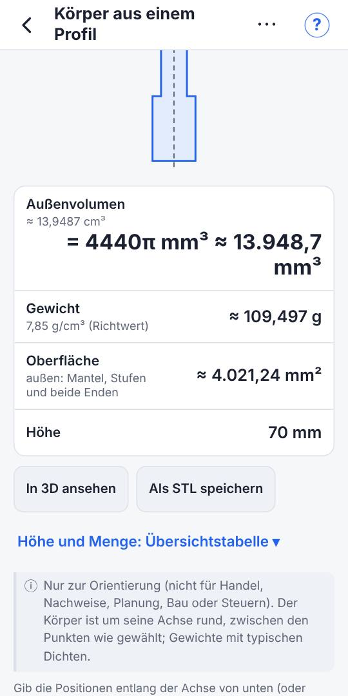
Die Beispielwelle → Außenvolumen 4440π mm³ ≈ 13,95 cm³, etwa 109,5 g in Eisen
In 3D ansehen zeigt den um die Achse gedrehten Körper, Stufen, flache Enden und Innenseite wie in der STL-Datei; mit einem Finger drehen, Halbieren zeigt den Schnitt, ← Zurück zum Profil führt zur Tabelle zurück. Eine STL-Datei lässt sich mit einem 3D-Drucker drucken (STL-Dateien).
STL-Dateien für 3D-Drucker
Pro Dies ist eine Funktion von QCalc Pro.
Was es kann Speichert einen Rotationskörper, einen Körper mit Querschnitten oder einen Körper aus einem Profil als STL-Datei für 3D-Drucker.
- Drücken Sie Als STL speichern unter den Ergebnissen des Körpers.
- Wählen Sie „1 Einheit = □ mm“ und die Feinheit der Dreiecke.
- Drücken Sie STL-Datei speichern und wählen Sie den Speicherort.
Prüfen Sie vor dem Drucken Größe und Wände in Ihrem Slicer.
Statistik
Was es kann Für eine Spalte: Mittelwert, Median, Standardabweichung, Quartile und mehr, mit Histogramm und Boxplot; für zwei Spalten: Regressionsgerade und Korrelation. Verteilungen oben gibt die Wahrscheinlichkeiten von Verteilungen (Wahrscheinlichkeitsverteilungen).
- Öffnen Sie Statistik in den Werkzeuge.
- Geben Sie die Werte ein, fügen Sie sie aus einer Tabellenkalkulation ein oder lesen Sie mit CSV-Datei lesen eine Spalte einer CSV-Datei (eine Überschriftenzeile und Zellen, die keine Zahlen sind, werden übersprungen).
- Bei einer Spalte stehen Histogramm und Boxplot unter den Ergebnissen. − und + ändern die Klassenbreite des Histogramms; Auto geht zur Breite nach der Sturges-Regel zurück.
- Bei zwei Spalten zeichnet 📈 Im Graphen zeigen die Punkte und die Gerade (oder die gewählte Kurve).
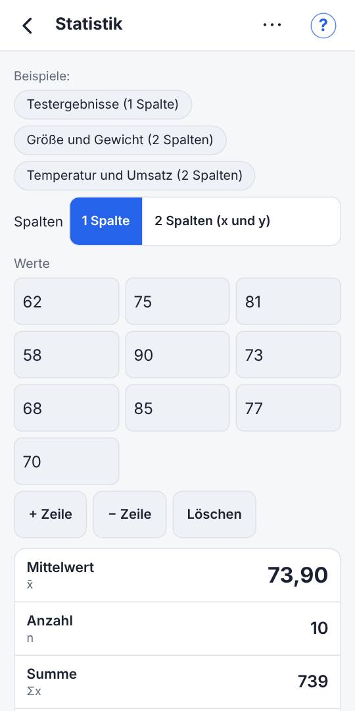
Testergebnisse von 10 Personen → Mittelwert 73,90, Median 74,00, Standardabweichung (Stichprobe) 9,94; das Histogramm hat 5 Klassen der Breite 10
Die Quartile kommen zuerst nach der Methode japanischer Schulbücher; die Methode der Tabellenkalkulationen steht unter „Mehr“. Die Whisker des Boxplots reichen bis zu den äußersten Werten von Q1 − 1,5 × IQR bis Q3 + 1,5 × IQR; Werte darüber hinaus sind Ausreißer und werden als Punkte gezeichnet (× ist der Mittelwert).
Bei zwei Spalten wählen Sie oberhalb der Ergebnisse eine Kurve: Gerade, Grad 2, 3 oder 4, Exponential, Log oder Potenz. Formel, R² und Vorhersage werden gezeigt, und 📈 Im Graphen zeigen zeichnet sie.
Pro Dies ist eine Funktion von QCalc Pro. Eine andere Kurve als die Gerade zu wählen und die Tabelle als CSV-Datei zu speichern sind Funktionen von QCalc Pro (Formeln und R² der anderen Kurven stehen auch ohne Pro unter „Mehr“).
- Ein Wert, der keine Zahl ist, wird mit Zeile und Korrekturhinweis angezeigt.
Wahrscheinlichkeitsverteilungen
Was es kann Für die Normal-, Binomial-, Poisson-, t- und χ²-Verteilung: die Wahrscheinlichkeit eines Bereichs a ≤ X ≤ b, die Dichte (P(X = a) bei Binomial und Poisson) und das Quantil, mit dem Bereich farbig im Graphen.
- Drücken Sie Verteilungen oben in Statistik und wählen Sie eine Verteilung.
- Geben Sie die Parameter ein (Mittelwert μ und Standardabweichung σ bei der Normalverteilung, Versuche n und Erfolgswahrscheinlichkeit p bei der Binomialverteilung).
- Geben Sie a und b des Bereichs ein. Ein leeres Feld heißt keine Grenze auf dieser Seite (P(X ≤ b) oder P(a ≤ X)).
- Eine kumulierte Wahrscheinlichkeit nach Quantil: P(X ≤ x) = gibt ihr x (bei Binomial und Poisson das kleinste k mit P(X ≤ k) mindestens so groß), gestrichelt im Graphen.
Normal, μ = 0, σ = 1, von −1,96 bis 1,96 → 0,950004; x mit P(X ≤ x) = 0,975 → 1,95996
Dieselben Funktionen gehen im Eingabefeld: normdist(1.96, 0, 1, 1) (P(X ≤ 1,96)), normdistinv(0.975, 0, 1), binomdist(3, 10, 0.5) (P(X = 3)), poisson(2, 3, 1), tdist(2, 10, 1), tdistinv(0.975, 10), chisqdist(7.81, 3, 1), chisqdistinv(0.95, 3). Ohne die letzte 1 geben sie die Dichte. Tippen Sie auf ein Ergebnis, um seinen Ausdruck ins Eingabefeld zu setzen.
Rechennotizen
Was es kann Eine Notiz mit einer Rechnung pro Zeile und ihrem Ergebnis rechts. Geben Sie einem Wert einen Namen und verwenden Sie ihn in den Zeilen darunter.
- Öffnen Sie Rechennotizen in den Werkzeuge.
- Schreiben Sie eine Rechnung pro Zeile, etwa
rent = 85000 JPY. - Verwenden Sie den Namen in einer späteren Zeile:
rent × 12. - Eine Zeile mit dem Summenwort addiert die Ergebnisse darüber.
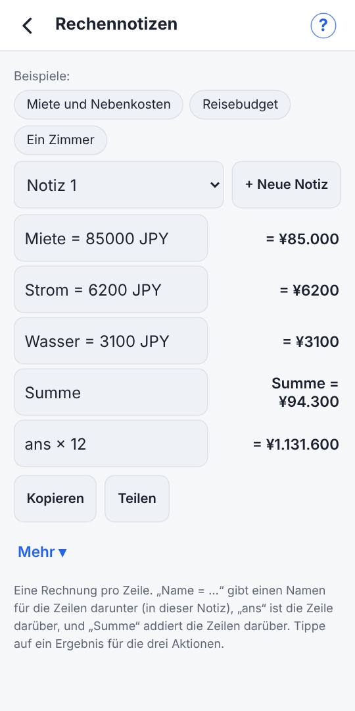
Miete 85000, Strom 6200, Wasser 3100 (JPY) → die Summenzeile zeigt ¥94300
Pro Dies ist eine Funktion von QCalc Pro. Die erste Notiz ist kostenlos, ebenso das Einlesen einer Datei oder einer Freigabe in sie (in eine leere Notiz oder an ihr Ende). Weitere Notizen (auch als neue Notiz einlesen) und das Speichern als Text oder CSV sind Funktionen von QCalc Pro.
Eine Zeile, die mit # (aber nicht # und einer Ziffer) oder // beginnt, ist eine Bemerkung (sie wird nicht berechnet). #3, mit einer Ziffer direkt nach #, ist das Ergebnis von Zeile 3.
- Um eine Datei einzulesen, drücken Sie Datei öffnen unter Mehr ▾ und wählen eine .txt- oder .csv-Datei. Eine .txt gibt eine Zeile je Zeile; eine von QCalc gespeicherte .csv ihre Spalte „Rechnung“, eine andere .csv ihre erste Spalte. UTF-8 und Shift_JIS (eine japanische CSV aus Excel) können gelesen werden.
- Wählen Sie in einer anderen App (Notizen, E-Mail …) Text oder eine .txt- oder .csv-Datei und dann QCalc unter „Teilen“ dieser App: Die Rechennotizen öffnen sich.
- Wählen Sie dann Als neue Notiz oder Am Ende dieser Notiz anfügen; bei einer einzigen Zeile auch Ins Eingabefeld setzen. Eine neue Notiz bekommt den Namen der Datei (ohne Endung).
Eingelesenes ist nur Text und wird nach denselben Regeln wie getippte Zeilen berechnet. Eine Datei über 1 MB oder mit mehr als 300 Zeilen (so viel fasst eine Notiz) wird nicht eingelesen, und die App sagt es.
Zeilennummern und #3
Was es kann Die Zeilen der Notizen haben ihre Nummern. #3 verwendet das Ergebnis von Zeile 3 (einer Zeile darüber). Ändert sich eine Zeile darüber, werden die Zeilen, die sie verwenden, sofort neu berechnet.
- Tippen Sie auf die Nummer einer Zeile für Zeile darüber einfügen, Zeile darunter einfügen, Nach oben, Nach unten und Diese Zeile löschen.
- Während eine andere Zeile geschrieben wird, tippen Sie auf eine Zeilennummer, um #3 (oder ihre Nummer) hineinzuschreiben.
Zeilen 1 bis 3 Miete, Strom und Wasser, Zeile 4 „Summe“, Zeile 5 #4 / 2 → ¥47,150 (94.300 / 2)
Werden Zeilen eingefügt, gelöscht oder verschoben, folgen die in den Zeilen geschriebenen Nummern und meinen weiter dieselben Zeilen. Ein Verweis auf eine gelöschte Zeile wird zu #?, und die Zeile sagt es.
#3 kann nur eine Zeile über der Zeile sein, in der es steht.
Eine Zeile, die über eine von ihr verwendete Zeile (ihr #4) verschoben wird, lässt sich nicht berechnen: Die App sagt es („Zeile 1 verwendet #2 und lässt sich deshalb nicht über #2 berechnen“) und bietet Rückgängig an.
Tabellenmodus
Was es kann Eine Notiz als Tabelle: Spalten mit Namen, eine Spalte, die per Formel aus den anderen berechnet wird (z. B. Betrag = Menge × Preis), und Summe und Mittelwert jeder Spalte. Eine Zelle kann eine Einheit oder Währung haben, z. B. 3 kg oder 120 JPY.
- Drücken Sie Tabelle über der Notiz. Sie beginnt mit einem Beispiel: Artikel, Menge, Preis und Betrag (Menge × Preis).
- Geben Sie einen Wert in eine Zelle ein: Formelspalten, Summen und Mittelwerte werden sofort neu berechnet.
- Tippen Sie auf den Namen einer Spalte für Umbenennen, Mit einer Formel berechnen (zum Beispiel Menge × Preis) und zum Einfügen, Verschieben oder Löschen einer Spalte; auf eine Zeilennummer zum Einfügen, Verschieben oder Löschen einer Zeile.
- + Zeile und + Spalte fügen eine Zeile und eine Spalte hinzu. Eine als „Betrag = Menge × Preis“ hinzugefügte Spalte ist eine Formelspalte.
3 Äpfel zu 120 JPY, 2 Brot zu 250 JPY, 1 Milch zu 180 JPY → Beträge ¥360, ¥500, ¥180, Summe ¥1040, Mittelwert ≈ ¥346.67
Eine Zelle nur mit Wörtern (der Name eines Artikels) zählt nicht zu den Summen. Werte in verschiedenen Einheiten derselben Größe (3 kg und 500 g) werden zusammengezählt.
Werte verschiedener Art in einer Spalte (3 kg und 2): Summe und Mittelwert zeigen „Werte mit verschiedenen Einheiten gemischt“. Der Mittelwert einer Spalte mit Geld hat 2 Nachkommastellen (≈ ¥346,67).
- Als CSV speichern unter Mehr ▾ speichert die Tabelle als CSV-Datei (Zeilennummern, Spaltennamen, Werte, Summe und Mittelwert). Eine mit Datei öffnen gewählte CSV-Datei kann Als Tabelle (erste Zeile: Spaltennamen) gelesen werden.
Auf einem schmalen Bildschirm wischen Sie die Tabelle seitlich für die anderen Spalten; die Spalte der Zeilennummern bleibt links.
Pro Dies ist eine Funktion von QCalc Pro. Der Tabellenmodus (mit Speichern als CSV und Lesen einer CSV-Datei als Tabelle) ist eine Funktion von QCalc Pro. Zeilennummern und #3 sind kostenlos.
Graphen
2D-Graph
Was es kann Zeichnet Graphen von y = f(x). Ziehen verschiebt, Spreizen zoomt.
- Öffnen Sie Graph über ☰ (oder 📈 über dem Eingabefeld).
- Geben Sie die Funktionen ein, eine pro Zeile, und den Bereich von x.
- Drücken Sie Zeichnen.
- Tippen Sie auf den Graphen, um die Koordinaten eines Punktes zu sehen.
- Die Art jeder Linie wird an ihrer Form erkannt; oben lässt sie sich auch wählen: y = f(x), Parameter, Polar, Implizit (eine andere Art als im Feld setzt ein Beispiel dafür ein).
Parameter x = cos(t), y = sin(2t) (mit einem Bereich von t), polar r = 1 + cos(θ) (ein Bereich von θ, zuerst 0 bis 2π; t geht statt θ), implizit x^2 + y^2 = 1, x^3 + y^3 = 3x y (eine Gleichung mit x und y)
Parameter- und Polarkurven nehmen Winkel im Bogenmaß. Eine implizite Kurve verbindet die Punkte eines Gitters, an denen linke Seite − rechte Seite das Vorzeichen wechselt, mit einem feineren Gitter, wo sie verwickelt ist; Verschieben oder Zoomen zeichnet sie für den neuen Ausschnitt neu.
Eine Parameter- oder Polarkurve hat Knöpfe für ihre Länge und Fläche (polar, oder eine geschlossene Parameterkurve). Die Polarfläche ist ½∫r² dθ über den Bereich von θ (zweimal Umlaufenes zählt doppelt); eine Parameterkurve, die sich selbst schneidet, hat keine Fläche. Analysis ▾, Fläche und Länge ▾ und Körper bilden ▾ sind für Linien y = f(x).
Buchstaben wie a und b in den Formeln bekommen Schieberegler unter dem Graphen (höchstens 6). Beim Bewegen wird der Graph sofort neu gezeichnet. Den Wert antippen, um eine Zahl einzugeben; ▶ bewegt ihn hin und her. ⋯ ändert den Bereich (zuerst −5 bis 5) und den Schritt (0,1).
Schieberegler bekommen die einzelnen Buchstaben a bis z und A bis Z außer e, i, t, x, y und E, I, X, Y. Ihre Werte gelten nur in diesem Graphen: im Rechner bleibt a das Ar, c die Lichtgeschwindigkeit und g das Gramm. Eine Variable mit eigenem Wert (etwa k := 2) behält diesen Wert, und ein Buchstabe als Funktion, wie f in f(x), bekommt keinen Schieberegler. Einen Buchstaben von x trennen: a x oder a*x (ax ist ein Name).
Analysis ▾ liefert Ableitung, Tangenten, Nullstellen und Extrema.
Tippen Sie auf ein Beispiel unter dem Graphen, um es zu zeichnen.
Fläche und Länge
Was es kann Die Fläche zwischen einer Kurve und der x-Achse oder zwischen zwei Kurven, und die Länge einer Kurve. Die Enden des Bereichs lassen sich mit dem Finger ziehen.
- Zeichnen Sie die Funktionen im 2D-Graphen.
- Öffnen Sie Fläche und Länge ▾.
- Geben Sie den Bereich a und b ein oder ziehen Sie die Linien an den Enden.
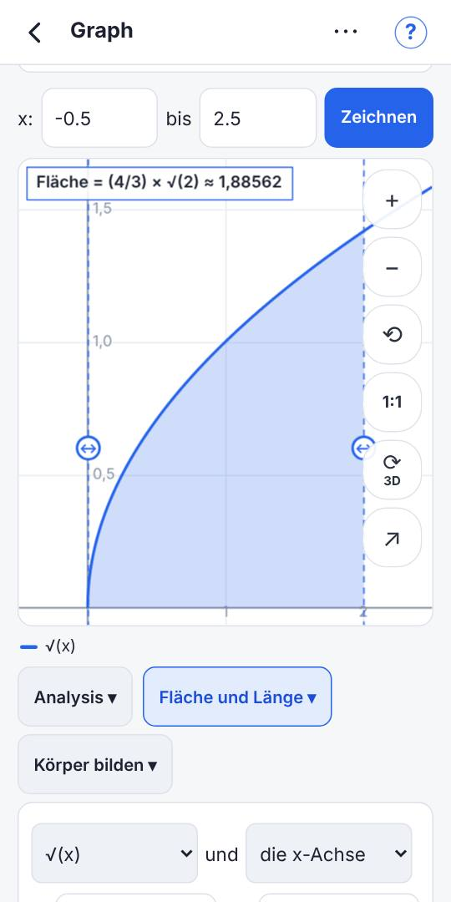
√x von 0 bis 2 → Fläche 1,8856181
Wechseln Sie zu Länge für die Länge der Kurve.
Einen Körper bilden (Rotationskörper)
Was es kann Volumen und Oberfläche des Körpers, der entsteht, wenn ein Bereich des 2D-Graphen um eine Achse gedreht wird.
- Zeichnen Sie die Funktionen im 2D-Graphen (zum Beispiel
xundx^2). - Drücken Sie den runden Knopf ⟳ 3D am Graphen. Der Körper um die x-Achse erscheint sofort in 3D, mit seinem Volumen groß darüber (QCalc Pro). Ohne Pro zeigt der 2D-Graph den Schnitt des Körpers (an der Achse gespiegelt) und sein Volumen.
- Für eine andere Achse gehen Sie mit ← Zurück zu 2D zurück und tippen auf ihre Linie; die Linie y = k ziehen Sie mit dem Finger. In 3D ansehen zeigt ihn wieder in 3D.
- ↶ Rückgängig kehrt zur vorherigen Achse zurück.
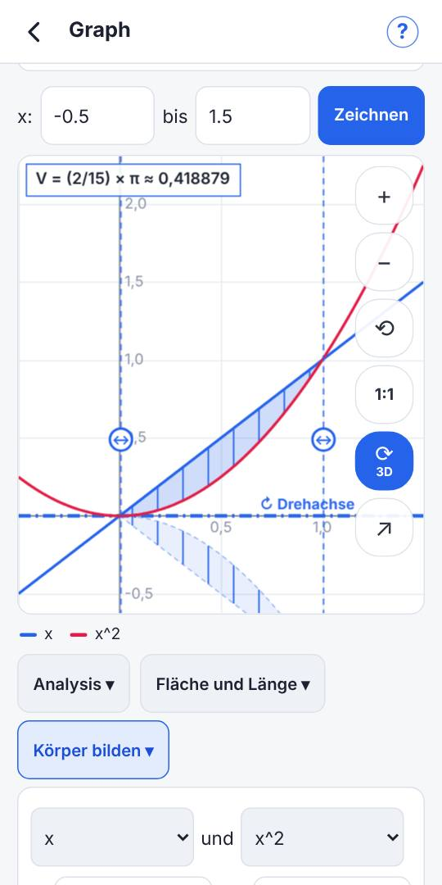
Zwischen y = x und y = x², um die x-Achse → Volumen 2π/15 ≈ 0,418 879
Methode mit Linien zeigen zeichnet die Scheiben (Ringe) oder Zylinderschalen. Die Zeile Guldinsche Regel: vergleicht das Volumen aus dem Schwerpunkt mit dem Integral.
Pro Dies ist eine Funktion von QCalc Pro. Den Körper in 3D mit dem Finger zu drehen ist, wie der 3D-Graph, eine Funktion von QCalc Pro. Ohne Pro erscheint stattdessen die Zeile In 3D drehen (QCalc Pro).
Körper mit bekannten Querschnitten
Was es kann Das Volumen eines Körpers, dessen Grundfläche der Bereich zwischen zwei Kurven ist, mit darauf stehenden Quadraten, gleichseitigen Dreiecken oder Halbkreisen.
- Öffnen Sie Körper bilden ▾.
- Wählen Sie Querschnitte (Formen auf dem Bereich).
- Wählen Sie die Form (□ △ ◠); weitere stehen unter Weitere Formen ▾.
Quadrate auf dem Bereich zwischen y = x und y = x² → Volumen 1/30
3D-Graph
Pro Dies ist eine Funktion von QCalc Pro.
Was es kann Zeichnet Flächen z = f(x, y) und Körper in 3D, die Sie mit dem Finger drehen können.
- Wählen Sie 3D z = f(x, y) unter Graph.
- Geben Sie bis zu vier Funktionen und die Bereiche von x und y ein und drücken Sie Zeichnen.
- Mit einem Finger in jede Richtung drehen (auch über oben und unten hinaus). Mit zwei Fingern: auseinander oder zusammen zum Zoomen, gemeinsam ziehen zum Verschieben, verdrehen zum Drehen im Bild.
- Mit der Würfel-Schaltfläche wählen Sie sofort Von vorn, Von oben oder Von der Seite. ⟲ stellt die erste Ansicht und Größe wieder her.
- Durchsichtig macht Flächen und Körper durchsichtig: Rück- und Innenseiten und die Stellen, an denen sich zwei Flächen schneiden, werden sichtbar, die Kanten bleiben. Der Schieberegler daneben stellt die Deckkraft ein; wird er bewegt, während Durchsichtig aus ist, schaltet er es ebenfalls ein (der Schalter von Durchsichtig steht dann auf an). Ein erneuter Druck auf Durchsichtig schaltet es aus. Bei zwei oder mehr Dingen wählen die Schaltflächen darunter, was durchsichtig ist (zum Beispiel nur der Behälter eines Tanks, die Füllmenge kräftig).
- Kasten und Achsen blendet den Kasten mit Gitter und Achsen aus und wieder ein.
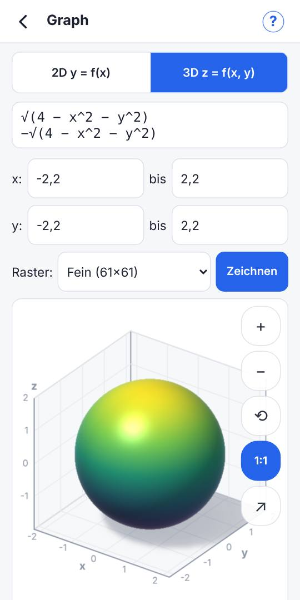
3D wird mit der GPU des Geräts (WebGL 2) gezeichnet, mit Licht und Schatten fast wie echt; die Farben nach der Höhe bleiben. Ist es langsam, wird beim Drehen etwas gröber gezeichnet und nach dem Loslassen wieder scharf.
Auf einem Gerät ohne WebGL 2 wird 3D wie bisher gezeichnet; dann lässt sich Durchsichtig nicht drücken, und es erscheint „Auf diesem Gerät nicht verfügbar“.
Partielle Ableitungen ▾ zeichnet ∂f/∂x und ∂f/∂y.
Auch im 3D-Graphen bekommen die Buchstaben der Formeln Schieberegler (QCalc Pro).
Volumen und Oberfläche (3D)
Was es kann Das Volumen unter einer Fläche des 3D-Graphen (oder zwischen zwei Flächen) und die Oberfläche.
- Zeichnen Sie die Flächen im 3D-Graphen.
- Öffnen Sie Volumen und Oberfläche ▾: Volumen und Oberfläche erscheinen sofort.
- Wählen Sie den Bereich: ein Rechteck, eine Kreisscheibe, den eingeschlossenen Teil oder einen per Formel gegebenen.
Die Beispielkugel (Radius 2) → Volumen 32π/3, Oberfläche 16π
Unter Beispiel unten lässt sich jeder Körper wählen: Zeichnen zeichnet ihn in 3D mit den Werten der Figuren, Zahlen ändern öffnet die Figuren.
Für einen im 2D-Graphen (⟳ 3D) oder in Körper aus einem Profil gebildeten Körper zeigt Volumen und Oberfläche ▾ in seiner 3D-Ansicht die dort gefundenen Werte (Werte des Rotationskörpers). Die Werkzeuge für den Bereich erscheinen wieder, wenn andere Formeln gezeichnet werden.
Wo die Flächen in einem Teil des Bereichs keine reellen Werte haben, misst Eingeschlossenen Teil messen nur dort, wo sie reell sind.
Formulare: Analysis, Gleichungen, Matrizen
Ableitungen, Integrale, Grenzwerte, Summen
Was es kann Die Tasten der Seite Analysis öffnen ein Formular mit Kästchen □.
- Drücken Sie d/dx, ∫, lim, Σ oder eine andere Taste auf der Seite Analysis.
- Füllen Sie die Kästchen aus. Die Variable kann x bleiben.
- Das Ergebnis erscheint darunter; = legt es im Verlauf ab.
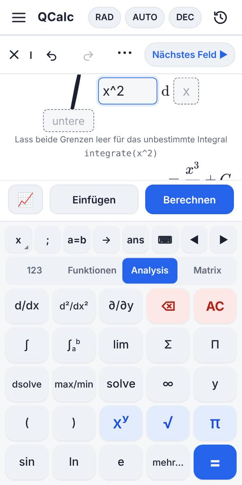
∫ x² sin(x) dx von 0 bis π → = π² − 4, darunter ≈ 5,869 604 401 089 36
Ein Grenzwert kann Beide Seiten, Von rechts (+) oder Von links (−) sein.
- taylor (Taylorreihe) auf der Seite Analysis nimmt eine Funktion f(x), eine Mitte a (zuerst 0) und einen Grad n (zuerst 5, bis 20) und gibt das Taylorpolynom vom kleinsten Grad an, etwa
x − x³/6 + x⁵/120 + O(x⁶). Die Koeffizienten bleiben exakt, wo es geht (Brüche, √, π).taylor(sin(x), x, 0, 5)im Eingabefeld geht auch. - Im Graphen vergleichen zeichnet die Funktion und ihr Taylorpolynom zusammen im 2D-Graphen.
Hat die Funktion oder eine Ableitung in der Mitte keinen endlichen Wert (√x oder 1/x bei x = 0), sagt es die App; ein Wert aus einem Grenzwert wie sin(x)/x bei x = 0 geht. Dauert es lange, einen kleineren Grad versuchen.
Gleichungen
Was es kann Löst Gleichungen und Gleichungssysteme.
- Drücken Sie die Gleichungstaste auf der Seite Analysis oder tippen Sie
solve(x^2 − 5x + 6 = 0). - Das Ergebnis wird als „x = 2 oder x = 3“ angezeigt.
solve(x^2 − 5x + 6 = 0) → x = 2, x = 3
Matrizen und Vektoren
Was es kann ▦ auf der Seite Matrix gibt eine Matrix als Tabelle ein (bis 30 × 30).
- Drücken Sie ▦ auf der Seite Matrix.
- Wählen Sie Zeilen und Spalten und füllen Sie die Kästchen aus.
- Rechnen Sie mit det, Transponierte, Inverse und den anderen Tasten.
Tabellen aus einer Tabellenkalkulation lassen sich einfügen; Als Tabelle kopieren (für eine Tabellenkalkulation) im ⋯ kopiert sie zurück.
Einstellungen, Sprache, Widget
Einstellungen
Was es kann Die meistgenutzten Einstellungen stehen oben; die, die kaum jemand ändert, unter Weitere Einstellungen. Eine Änderung gilt sofort.
| Einstellung | Was sie ändert |
|---|---|
| Winkeleinheit | Radiant, Grad, Gon |
| Exakt oder näherungsweise | Automatisch, immer exakt, immer genähert |
| Zahlenformat | Dezimalzeichen und Zifferngruppen (Zahlenformat) |
| Brüche | Automatisch, dezimal, Bruch, gemischter Bruch |
| Genauigkeit (signifikante Stellen) | Die Rechengenauigkeit (Standard 15) |
| Angezeigte Stellen je Werkzeug | Die Stellen jedes Werkzeugs und die gemeinsamen Stellen von Figuren, Behältern, Körpern und Graph (Angezeigte Stellen je Werkzeug) |
| Hell oder dunkel | Die Farben des Bildschirms |
| Textgröße | Die Schrift von Verlauf, Eingabefeld und Ergebnis |
| Farbschema | Die Farbe der Tasten (außer Blau: QCalc Pro) |
| Ergebnis beim Tippen zeigen | Die Vorschau |
| Wechselkurse jetzt aktualisieren | Lädt die Kurse sofort |
Alle Einstellungen zurücksetzen setzt alles auf die Standardwerte zurück (die Sprache bleibt).
Angezeigte Stellen je Werkzeug
Was es kann Jedes Werkzeug kann seine Ergebnisse mit eigener Stellenzahl zeigen. Öffnen Sie Angezeigte Stellen… über ⋯ rechts neben dem Titel des Werkzeugs. Figuren (mit den Behältern), Körper aus einem Profil und der Graph (Fläche, Länge, Körper bilden, 3D) haben eine gemeinsame Einstellung.
- Drücken Sie in einem Werkzeug ⋯ und wählen Sie Angezeigte Stellen….
- Wählen Sie Empfohlen (automatisch), Signifikante Stellen oder Nachkommastellen und stellen Sie die Zahl mit + und − ein. Jedes Werkzeug merkt sich seine Wahl.
- Mit gewählten Stellen sind Nullen am Ende auf Behalten (2,50) (anfangs: genau so viele Stellen wie gewählt, 1,000000000) oder Weglassen (2,5) (1).
- Ein Werkzeug, das nicht seine Standardstellen verwendet, trägt in der Liste der Einstellungen und in Angezeigte Stellen… unter ⋯ die Markierung „geändert“.
Das Volumen eines Zylinders 11.250π cm³ → empfohlen 11.250π ≈ 35.342,9 cm³; mit 2 Nachkommastellen 11.250π ≈ 35.342,92 cm³; mit 4 gültigen Ziffern 11.250π ≈ 35.340 cm³
Für Figuren, Behälter, Körper aus einem Profil und den Graphen stellt Mehr: jede Art, das 3D-Bild, Runden, CSV ▾ außerdem Für jede Art von Größe einzeln ein (Volumen, Fläche, Länge, Gewicht und %), die Zahlen Im 3D-Bild (empfohlen: 3 signifikante Stellen, % mit einer Nachkommastelle), das Runden (Kaufmännisch runden, Abrunden oder Aufrunden) und die als CSV gespeicherten Tabellen (Alle Stellen oder Wie angezeigt). Exakte Werte (11250π) bleiben; nur die Zahlen nach „≈“ ändern sich.
Es gibt drei Wege zurück. Für ein Werkzeug drücken Sie Zurück zum Standard (empfohlen) unter ⋯ → Angezeigte Stellen…. Für alle Werkzeuge drücken Sie Alle zurück zum Standard (empfohlen) unter Angezeigte Stellen je Werkzeug in den Einstellungen (auch Genauigkeit (signifikante Stellen) des Rechners wird 15 und Höchstzahl der Nachkommastellen wieder ohne Grenze). Für alles drücken Sie Alle Einstellungen zurücksetzen in den Einstellungen (Einstellungen und Stellen je Werkzeug auf den Standard; die Sprache bleibt). Die empfohlenen Stellen sind ein bis zwei mehr, als meist nötig ist (genauen Werten werden keine Stellen angehängt). Geld wird bis zur kleinsten Einheit der Währung Ihrer Region gezeigt (0,01 Euro), mit seinen Nullen (19,90); Figuren, Behälter und Körper aus einem Profil haben 6 signifikante Stellen nach „≈“, Fläche, Länge, Körper bilden und 3D-Werte des Graphen 8 (mindestens 5 Nachkommastellen), % eine Nachkommastelle. Empfohlene Stellen haben keine Nullen am Ende, außer bei Geld, Grundpreisen und Statistik.
Gerechnet wird mit 12 Stellen mehr als angezeigt (nahe der Grenze der Genauigkeit mindestens 4; numerische Integration 4 mehr, höchstens 24 Stellen); zum Anzeigen wird gerundet.
Numerische Integration (Flächen, Längen und Volumen im Graphen) ist auf etwa 20 Stellen sicher: Mehr als 20 werden nicht angezeigt. Die mit doppelter Genauigkeit berechneten Zahlen (die Werkzeuge, die in JavaScript rechnen: Preis, Prozente, Grundpreis, Statistik und andere; die Füllhöhe, die Tabellen der Behälter, Körper aus einem Profil, das 3D-Bild) zeigen höchstens 12 Stellen.
Rechner, Formulare und Notizen verwenden Genauigkeit (signifikante Stellen) in den Einstellungen.
Sprache
Was es kann Die App gibt es auf English, 日本語, Español, Deutsch, Français, 한국어 und 繁體中文.
- Wählen Sie Sprache in ☰.
- Wählen Sie eine Sprache: Die App öffnet sich darin neu, mit Verlauf und dem gerade getippten Ausdruck.
- Wie das Gerät folgt wieder der Sprache des Telefons.
Ab Android 13 lässt sich die Sprache auch für jede App in den Einstellungen des Telefons festlegen.
Widget, Kachel und Verknüpfungen
Was es kann QCalc schnell öffnen über ein Widget auf dem Startbildschirm, eine Kachel der Schnelleinstellungen oder die Verknüpfungen am Symbol. Alles kostenlos.
- Öffnen Sie QCalc schnell öffnen ganz unten in den Werkzeuge.
- Wählen Sie Widget oder Kachel und folgen Sie dem Bildschirm.
- Halten Sie das Symbol gedrückt für die Verknüpfungen Neue Rechnung, Werkzeuge und Umrechnen.
Das Widget zeigt das letzte Ergebnis und Knöpfe für Rechnen, Werkzeuge und Umrechnen.
Über diese App und Datenschutz
Was es kann Über diese App zeigt die Version, den Datenschutz, die Lizenzen und Links zum Quellcode.
- Bei Google Play bewerten öffnet die Seite von QCalc bei Google Play; dort kannst du Sterne vergeben und eine Rezension schreiben.
- QCalc weiterempfehlen teilt die Adresse von QCalc bei Google Play.
- Fehler oder Wunsch melden öffnet einen Entwurf in der Mail-App, nur mit Version, Gerät und Sprache; ob du ihn sendest, entscheidest du.
- QCalc sammelt keine persönlichen Daten und sendet nichts.
- Das Internet wird nur für die Wechselkurse genutzt.
- Die Rechenmaschine steht unter der GNU GPL v2 oder später (Open-Source-Lizenzen).
QCalc Pro
Was kostenlos ist
Was es kann Rechnungen, 2D-Graphen, Flächen und Längen, Rotationskörper, Formen, Tanks (flache Böden), die Alltagswerkzeuge, Umrechnung, Statistik, die erste Rechennotiz, das Widget und diese Anleitung sind kostenlos, ohne Werbung.
- Ohne Pro lässt sich 3D einmal kostenlos ausprobieren. Die 3D-Ansicht zeigt dann „Kostenloser 3D-Test, nur einmal“, und der Test endet, wenn die 3D-Ansicht geschlossen wird. GIF, STL und die anderen Exporte gehören nicht dazu.
Was QCalc Pro hinzufügt
Was es kann Ein Kauf schaltet alle Pro-Funktionen frei, auch die späterer Updates. Kein Abo, keine Werbung.
| Funktion | Abschnitt dieser Anleitung |
|---|---|
| Mehr als 1000 signifikante Stellen (bis 200000) | Das Ergebnis lesen |
| 3D-Graphen, in 3D ansehen | 3D-Graph |
| Farbthemen (7 Farben) | Einstellungen |
| Verlauf exportieren (CSV) | Den Verlauf exportieren |
| Tabellen als CSV (Kredit, Sparen) | Kredit |
| Tankböden und Tabellen | Tankböden |
| Körper aus einem Profil | Körper aus einem Profil |
| Körper und Tanks in 3D | Körper und Tanks in 3D |
| STL-Dateien | STL-Dateien |
| Schieberegler in 3D | 3D-Graph |
| GIF und Bilder ohne Kennzeichnung | Teilen |
| Weitere Rechennotizen, als Datei gespeichert | Rechennotizen |
| Regressionskurven (außer der Geraden) | Statistik |
| Margin und Positionsgröße (Erhaltungsquote und Nachschuss, Positionsgröße aus dem Stop, Zinsen und Leihgebühr) | Margin: Erhaltungsquote |
| Tabellenmodus der Rechennotizen (Formelspalten, Summen und Mittelwerte, CSV) | Tabellenmodus |
So geht’s › in einer Zeile der Pro-Funktionen öffnet den Abschnitt dieser Anleitung.
Kaufen und wiederherstellen
Der Preis wird im Kaufbildschirm von Google Play angezeigt.
- Öffnen Sie QCalc Pro über ☰ (oder über das Fenster einer gesperrten Funktion).
- Drücken Sie QCalc Pro kaufen und kaufen Sie im Bildschirm von Google Play.
- Auf einem Telefon, auf dem Sie schon gekauft haben, oder nach einer Neuinstallation drücken Sie Kauf wiederherstellen.
Der Kauf gehört zu Ihrem Google-Konto und gilt deshalb auch auf Ihren anderen Geräten.
Wenn etwas nicht klappt
Häufige Fragen
- Das Ergebnis ist keine Dezimalzahl: Prüfen Sie den Schalter oben oder Exakt oder näherungsweise.
- x ergibt seltsame Ergebnisse: x ist eine Variable; multiplizieren Sie mit der Taste ×.
- Die Wechselkurse sind alt: Drücken Sie Wechselkurse jetzt aktualisieren (mit Internet).
- Die obere Tastenreihe fehlt: Bei großer Schrift ist sie ausgeblendet; ⌨ am rechten Ende der Reiter zeigt sie.
- Der 3D-Graph öffnet sich nicht: Der 3D-Graph ist eine Funktion von QCalc Pro; ohne Pro lässt er sich einmal kostenlos ausprobieren (QCalc Pro).
Fehlermeldungen und ihre Behebung
Was es kann Eine Fehlermeldung sagt, was falsch ist und wie es zu beheben ist. Die häufigsten:
| Meldung | Behebung |
|---|---|
| Klammern passen nicht zusammen | Gleich viele ( und ) setzen |
| 1.5 lässt sich nicht lesen (mit Dezimalkomma) | 1,5 tippen; Argumente mit „;“ trennen |
| Die Einheiten passen nicht | Größen gleicher Art addieren (m und kg lassen sich nicht addieren) |
| Zuerst eine Funktion zeichnen | Im Graphen Zeichnen drücken, bevor Fläche oder Körper geöffnet werden |
| Das Zeitlimit wurde erreicht | Das Zeitlimit verlängern oder den Ausdruck vereinfachen |
Das Zeitlimit einer Rechnung
Was es kann Eine sehr lange Rechnung stoppt nach Zeitlimit (Sekunden) (Standard 20 Sekunden, 1 bis 3600).
- Während der Rechnung erscheint ein Hinweis; ein Tippen darauf stoppt sie.
- Für mehr Zeit ändern Sie Zeitlimit (Sekunden) unter Weitere Einstellungen in den Einstellungen.
Hinweise zur Verwendung der Ergebnisse
Die Ergebnisse von QCalc dienen zur Orientierung. Verwenden Sie sie nicht für Handel oder Bescheinigungen (auch im gesetzlichen Messwesen), Planung und Bau, Steuererklärungen, Medizin oder Entscheidungen über Sicherheit.
- Die Menge in einem Tank setzt die ideale Form des Tanks voraus; ein echter Tank kann abweichen.
- Gewichte verwenden typische Dichten.
- Die Steuersätze sind die üblichen Sätze vom November 2026 und können im Feld geändert werden.
- Wechselkurse sind die geladenen, nicht die Kurse eines echten Geschäfts.
- Die Werkzeuge für Geld oder Sicherheit zeigen unter den Ergebnissen eine Hinweiszeile.
Glossar
| Wort | Bedeutung |
|---|---|
| Exakter Wert | Ein Wert mit Brüchen, √ und π. Er beginnt mit „=“ |
| Näherung | Ein Wert als Dezimalzahl. Er beginnt mit „≈“ |
| Signifikante Stellen | Die Stellenzahl eines Ergebnisses (die Genauigkeit) |
| ans | Das letzte Ergebnis |
| Vorschau | Das Ergebnis unter dem Eingabefeld beim Tippen |
| Rotationskörper | Ein Körper, der durch Drehen eines Bereichs um eine Achse entsteht |
| Boden | Der Abschluss an jedem Ende eines Tanks |
| Tabelle | Eine Tabelle der Menge zu jeder Füllhöhe |
| STL | Ein Dateiformat für Körper für 3D-Drucker |
| CSV | Eine Tabelle in einer Textdatei, die Tabellenkalkulationen öffnen |
| QCalc Pro | Die Funktionen für die Arbeit, freigeschaltet mit einem Kauf |
Stichwortverzeichnis
- ☆ Oben anheften — Verlauf und Speicher, Anheften, Notizen und Suche
- ↶ Rückgängig — Einen Körper bilden (Rotationskörper)
- + Spalte — Tabellenmodus
- + Zeile — Tabellenmodus
- 2D-Graph — 2D-Graph
- 3D-Graph — 3D-Graph
- = 0 lösen — Das Ergebnis lesen: exakt, genähert, Brüche
- Abbrechen — Neu in 1.16.0, Eine Zeile des Verlaufs bearbeiten
- Ableitung — Das Ergebnis lesen: exakt, genähert, Brüche
- Ableitungen, Integrale, Grenzwerte, Summen — Ableitungen, Integrale, Grenzwerte, Summen
- Abrunden — Angezeigte Stellen je Werkzeug
- Aktien und Anlage — Neu in 1.16.0, Aktien und Anlage
- Aktien: Gewinn und Verlust — Aktien: Gewinn und Verlust
- Alle Einstellungen zurücksetzen — Einstellungen, Angezeigte Stellen je Werkzeug
- Alle Felder leeren — Kästchen □ (die Formulare)
- Alle Stellen — Angezeigte Stellen je Werkzeug
- Alle zurück zum Standard (empfohlen) — Neu in 1.13.0, Angezeigte Stellen je Werkzeug
- Als Bruch — Das Ergebnis lesen: exakt, genähert, Brüche
- Als CSV speichern — Tabellenmodus
- Als neue Notiz — Rechennotizen
- Als neue Zeile — Eine Zeile des Verlaufs bearbeiten
- Als STL speichern — STL-Dateien für 3D-Drucker
- Als Tabelle (erste Zeile: Spaltennamen) — Tabellenmodus
- Als Tabelle kopieren — Neu in 1.16.0, Zeilen addieren, Den Verlauf exportieren (CSV)
- Als Tabelle kopieren (für eine Tabellenkalkulation) — Matrizen und Vektoren
- Am Ende dieser Notiz anfügen — Rechennotizen
- Analysis — Neu in 1.15.0, Die vier Tastenseiten, Kästchen □ (die Formulare), Ableitungen, Integrale, Grenzwerte, Summen
- Analysis ▾ — 2D-Graph
- Andere Böden ▾ — Tankböden und Tabellen
- Andere Dichte … — Formen: Fläche, Volumen, Länge
- Angezeigte Stellen je Werkzeug — Neu in 1.13.0, Einstellungen, Angezeigte Stellen je Werkzeug
- Angezeigte Stellen… — Neu in 1.13.0, Angezeigte Stellen je Werkzeug
- Anheften, Notizen und Suche — Anheften, Notizen und Suche
- Argumente einer Funktion beim Tippen zeigen — Hinweise zu den Argumenten
- Auf diesem Gerät nicht verfügbar — 3D-Graph
- Aufrunden — Angezeigte Stellen je Werkzeug
- Ausdruck bearbeiten — Eine Zeile des Verlaufs bearbeiten
- Ausdruck ins Eingabefeld — Das Ergebnis lesen: exakt, genähert, Brüche
- Ausdruck ins Eingabefeld setzen — Das Ergebnis lesen: exakt, genähert, Brüche
- Ausdruck ändern — Eigene Variablen und Funktionen
- Ausländische Aktien in Ihrer Währung — Ausländische Aktien in Ihrer Währung
- Auswählen: Summe und Mittelwert — Neu in 1.16.0, Zeilen addieren
- Auto — Statistik
- Automatisch — Zahlenformat: das Dezimalzeichen
- Bearbeitet — Eine Zeile des Verlaufs bearbeiten
- Bedienungsanleitung — Beispiele und Tipps in der App
- Behalten (2,50) — Neu in 1.13.0, Angezeigte Stellen je Werkzeug
- Behälter — Neu in 1.15.0, Neu in 1.12.0, Körper und Tanks in 3D, 3D-Graph
- Behälter: Füllmenge und Füllhöhe — Tanks: Füllmenge und Füllhöhe, Tankböden und Tabellen
- Bei Google Play bewerten — Neu in 1.15.0, Über diese App und Datenschutz
- Beide Seiten — Ableitungen, Integrale, Grenzwerte, Summen
- Beispiel — Volumen und Oberfläche (3D)
- Beispiele und Tipps — Beispiele und Tipps in der App
- Beispiele und Tipps in der App — Beispiele und Tipps in der App
- Bewegtes Bild (GIF) — Bilder und GIFs teilen
- Bilder und GIFs teilen — Bilder und GIFs teilen
- Boxplot — Statistik
- Brüche — Einstellungen
- Buchgewinne — Margin: Erhaltungsquote
- Böden — Tankböden und Tabellen
- CSV-Datei lesen — Neu in 1.16.0, Statistik
- Das Ergebnis lesen: exakt, genähert, Brüche — Das Ergebnis lesen: exakt, genähert, Brüche
- Das Zeitlimit einer Rechnung — Das Zeitlimit einer Rechnung
- Datei öffnen — Neu in 1.15.0, Rechennotizen, Tabellenmodus
- Daten — Daten
- Datumsangaben — Neu in 1.12.0, Daten
- Den Verlauf exportieren (CSV) — Den Verlauf exportieren (CSV)
- Details — Das Ergebnis lesen: exakt, genähert, Brüche
- Determinante — Das Ergebnis lesen: exakt, genähert, Brüche
- Die ersten drei Rechnungen — Die ersten drei Rechnungen
- Die vier Tastenseiten — Die vier Tastenseiten
- Diese Zeile löschen — Zeilennummern und #3
- Durchschnitt der Käufe — Durchschnittlicher Einstandskurs
- Durchschnittlicher Einstandskurs — Durchschnittlicher Einstandskurs
- Durchsichtig — Neu in 1.15.0, Körper und Tanks in 3D, 3D-Graph
- Ebene Figuren — Formen: Fläche, Volumen, Länge
- Eigene — Eigene Variablen und Funktionen
- Eigene Variablen und Funktionen — Eigene Variablen und Funktionen
- Eigenwerte — Das Ergebnis lesen: exakt, genähert, Brüche
- Ein Bild des Graphen teilen — Bilder und GIFs teilen
- Ein Werkzeug finden — Ein Werkzeug finden
- Eine Zeile des Verlaufs bearbeiten — Eine Zeile des Verlaufs bearbeiten
- Eine Zeile des Verlaufs wird bearbeitet — Eine Zeile des Verlaufs bearbeiten
- Einen Ausdruck eingeben — Einen Ausdruck eingeben
- Einen Körper bilden (Rotationskörper) — Einen Körper bilden (Rotationskörper)
- Einfügen — Listen: Funktionen, Einheiten, Konstanten, eigene Definitionen
- Eingeschlossenen Teil messen — Volumen und Oberfläche (3D)
- Einheiten und Währungen umrechnen — Neu in 1.12.0, Ausländische Aktien in Ihrer Währung, Einheiten und Währungen umrechnen
- Einstellungen — Neu in 1.15.0, Das Ergebnis lesen: exakt, genähert, Brüche, Zahlenformat: das Dezimalzeichen, Speichertasten (M+ M− MR MC)
- Empfohlen (automatisch) — Neu in 1.13.0, Angezeigte Stellen je Werkzeug
- Ergebnis beim Tippen zeigen — Einstellungen
- Ergebnis durch Tippen einfügen — Ergebnis durch Tippen einfügen
- Ergebnis kopieren — Das Ergebnis lesen: exakt, genähert, Brüche, Ergebnis durch Tippen einfügen
- Exakt oder näherungsweise — Einstellungen, Häufige Fragen
- Faktorisieren — Das Ergebnis lesen: exakt, genähert, Brüche
- Farbschema — Einstellungen
- Fehler oder Wunsch melden — Über diese App und Datenschutz
- Fehlermeldungen und ihre Behebung — Fehlermeldungen und ihre Behebung
- Fläche — 2D-Graph
- Fläche und Länge — Fläche und Länge
- Fläche und Länge ▾ — 2D-Graph, Fläche und Länge
- Formen: Fläche, Volumen, Länge — Formen: Fläche, Volumen, Länge
- Funktionen — Die vier Tastenseiten
- Funktionen, Einheiten und Währungen schreiben — Funktionen, Einheiten und Währungen schreiben
- Füllhöhe — Körper und Tanks in 3D
- Füllmenge — 3D-Graph
- Füllstand — Körper und Tanks in 3D
- Für jede Art von Größe einzeln — Angezeigte Stellen je Werkzeug
- Ganzen Verlauf löschen — Verlauf und Speicher
- Gekauft — Margin: Erhaltungsquote
- Genauigkeit (signifikante Stellen) — Neu in 1.15.0, Das Ergebnis lesen: exakt, genähert, Brüche, Einstellungen, Angezeigte Stellen je Werkzeug
- geändert — Neu in 1.13.0, Angezeigte Stellen je Werkzeug
- Gleichungen — Gleichungen
- Graph — Das Ergebnis lesen: exakt, genähert, Brüche, 2D-Graph, 3D-Graph
- Grundpreis: was ist günstiger — Neu in 1.12.0, Grundpreis: was ist günstiger
- Guldinsche Regel: — Einen Körper bilden (Rotationskörper)
- Halbelliptisch 2:1 — Tankböden und Tabellen
- Halbieren — Körper und Tanks in 3D, Körper aus einem Profil
- Halbkugel — Tankböden und Tabellen
- Hell oder dunkel — Einstellungen
- Hexadezimal — Das Ergebnis lesen: exakt, genähert, Brüche
- Hinweise zu den Argumenten — Hinweise zu den Argumenten
- Hinweise zur Verwendung der Ergebnisse — Hinweise zur Verwendung der Ergebnisse
- Histogramm — Statistik
- Häufige Fragen — Häufige Fragen
- Höchstzahl der Nachkommastellen — Angezeigte Stellen je Werkzeug
- Im 3D-Bild — Angezeigte Stellen je Werkzeug
- Im Graphen vergleichen — Neu in 1.15.0, Ableitungen, Integrale, Grenzwerte, Summen
- Im Verlauf behalten — Das Ergebnis lesen: exakt, genähert, Brüche
- Implizit — 2D-Graph
- In 3D ansehen — Körper und Tanks in 3D, Körper aus einem Profil, Einen Körper bilden (Rotationskörper)
- In 3D drehen (QCalc Pro) — Körper und Tanks in 3D, Einen Körper bilden (Rotationskörper)
- Ins Eingabefeld setzen — Rechennotizen
- Integral — Das Ergebnis lesen: exakt, genähert, Brüche
- Inverse — Das Ergebnis lesen: exakt, genähert, Brüche
- Jetzt aktualisieren — Währungen und Wechselkurse
- Kasten und Achsen — 3D-Graph
- Kauf wiederherstellen — Kaufen und wiederherstellen
- Kaufen und wiederherstellen — Kaufen und wiederherstellen
- Kaufmännisch runden — Angezeigte Stellen je Werkzeug
- Klassenbreite — Statistik
- Kopieren — Zeilen addieren
- Kredit — Neu in 1.12.0, Kredit
- Kurze Notiz hinzufügen — Verlauf und Speicher, Anheften, Notizen und Suche
- Kästchen □ (die Formulare) — Kästchen □ (die Formulare)
- Körper — Neu in 1.12.0, Formen: Fläche, Volumen, Länge, Körper und Tanks in 3D
- Körper aus einem Profil — Körper aus einem Profil, Volumen und Oberfläche (3D)
- Körper bilden ▾ — 2D-Graph, Körper mit bekannten Querschnitten
- Körper mit bekannten Querschnitten — Körper mit bekannten Querschnitten
- Körper und Tanks in 3D — Körper und Tanks in 3D
- Leerverkauft — Margin: Erhaltungsquote
- Listen: Funktionen, Einheiten, Konstanten — Die vier Tastenseiten, Listen: Funktionen, Einheiten, Konstanten, eigene Definitionen, Eigene Variablen und Funktionen
- Listen: Funktionen, Einheiten, Konstanten, eigene Definitionen — Listen: Funktionen, Einheiten, Konstanten, eigene Definitionen
- Länge — 2D-Graph, Fläche und Länge
- Löschen — Eigene Variablen und Funktionen
- Löschen und rückgängig machen — Löschen und rückgängig machen
- Margin: Erhaltungsquote — Margin: Erhaltungsquote
- Material (Dichte) — Neu in 1.15.0, Formen: Fläche, Volumen, Länge, Körper und Tanks in 3D
- Matrix — Die vier Tastenseiten, Matrizen und Vektoren
- Matrizen und Vektoren — Matrizen und Vektoren
- Mehr ▾ — Neu in 1.15.0, Margin: Erhaltungsquote, Körper aus einem Profil, Rechennotizen
- Mehr: jede Art, das 3D-Bild, Runden, CSV ▾ — Angezeigte Stellen je Werkzeug
- Methode mit Linien zeigen — Einen Körper bilden (Rotationskörper)
- Mit anderer Stellenzahl neu rechnen — Neu in 1.15.0, Das Ergebnis lesen: exakt, genähert, Brüche
- Mit einer Formel berechnen — Tabellenmodus
- Nach oben — Zeilennummern und #3
- Nach unten — Zeilennummern und #3
- Nachkommastellen — Neu in 1.13.0, Angezeigte Stellen je Werkzeug
- Neu in 1.12.0 — Neu in 1.12.0
- Neu in 1.13.0 — Neu in 1.13.0
- Neu in 1.15.0 — Neu in 1.15.0
- Neu in 1.16.0 — Neu in 1.16.0
- Neue Rechnung — Widget, Kachel und Verknüpfungen
- Nullen am Ende — Angezeigte Stellen je Werkzeug
- Nur diese Zeile — Eine Zeile des Verlaufs bearbeiten
- Nächste Schritte unter der neuesten Antwort vorschlagen — Das Ergebnis lesen: exakt, genähert, Brüche
- Nächstes Feld ▶ — Kästchen □ (die Formulare)
- Open-Source-Lizenzen — Über diese App und Datenschutz
- Parameter — 2D-Graph
- Partielle Ableitungen ▾ — 3D-Graph
- Polar — 2D-Graph
- Positionsgröße aus dem Stop — Positionsgröße aus dem Stop
- Preis: Rabatt und Steuer — Neu in 1.12.0, Preis: Rabatt und Steuer
- Primfaktoren — Das Ergebnis lesen: exakt, genähert, Brüche
- Prozente — Neu in 1.12.0, Prozente
- QCalc Pro kaufen — Kaufen und wiederherstellen
- QCalc schnell öffnen — Ein Werkzeug finden, Widget, Kachel und Verknüpfungen
- QCalc weiterempfehlen — Über diese App und Datenschutz
- Quantil: P(X ≤ x) = — Wahrscheinlichkeitsverteilungen
- Querschnitte (Formen auf dem Bereich) — Körper mit bekannten Querschnitten
- Raten, Monat für Monat — Kredit
- Rechennotizen — Neu in 1.12.0, Rechennotizen
- Rechnung teilen — Neu in 1.12.0, Rechnung teilen
- Rendite, KGV, KBV, Wachstum — Rendite, KGV, KBV, Wachstum
- Rückgängig — Löschen und rückgängig machen, Eine Zeile des Verlaufs bearbeiten, Eigene Variablen und Funktionen, Zeilennummern und #3
- Signifikante Stellen — Neu in 1.13.0, Angezeigte Stellen je Werkzeug
- So geht’s › — Was QCalc Pro hinzufügt
- So nutzen Sie dieses Formular › — Kästchen □ (die Formulare)
- Sollzinsen und Leihgebühr — Sollzinsen und Leihgebühr
- Sparen und Zinseszins — Neu in 1.12.0, Sparen und Zinseszins
- Speichertasten (M+ M− MR MC) — Speichertasten (M+ M− MR MC)
- Speichertasten anzeigen (M+ M− MR MC) — Speichertasten (M+ M− MR MC)
- Sprache — Sprache
- Statistik — Neu in 1.16.0, Neu in 1.12.0, Statistik, Wahrscheinlichkeitsverteilungen
- Steuerfreies Konto — Aktien: Gewinn und Verlust
- Steuerpflichtig — Aktien: Gewinn und Verlust
- STL-Datei speichern — STL-Dateien für 3D-Drucker
- STL-Dateien für 3D-Drucker — STL-Dateien für 3D-Drucker
- Tabelle — Tabellenmodus
- Tabellenmodus — Tabellenmodus
- Tankböden und Tabellen — Tankböden und Tabellen
- Tanks: Füllmenge und Füllhöhe — Tanks: Füllmenge und Füllhöhe
- Taylorreihe — Ableitungen, Integrale, Grenzwerte, Summen
- Textgröße — Einstellungen
- Transponierte — Das Ergebnis lesen: exakt, genähert, Brüche
- Umbenennen — Eigene Variablen und Funktionen, Tabellenmodus
- Umrechnen — Widget, Kachel und Verknüpfungen
- Umrechnen… — Das Ergebnis lesen: exakt, genähert, Brüche
- Variable speichern — Eigene Variablen und Funktionen
- Variablen — Neu in 1.16.0, Eigene Variablen und Funktionen
- Verlauf durchsuchen — Verlauf und Speicher, Anheften, Notizen und Suche
- Verlauf exportieren (CSV-Datei) — Verlauf und Speicher, Den Verlauf exportieren (CSV)
- Verteilungen — Neu in 1.16.0, Statistik, Wahrscheinlichkeitsverteilungen
- Volumen aus Messwerten — Volumen aus Messwerten
- Volumen und Oberfläche (3D) — Volumen und Oberfläche (3D)
- Volumen und Oberfläche ▾ — Volumen und Oberfläche (3D)
- Von der Seite — Neu in 1.15.0, Körper und Tanks in 3D, 3D-Graph
- Von links (−) — Ableitungen, Integrale, Grenzwerte, Summen
- Von oben — Neu in 1.15.0, Körper und Tanks in 3D, 3D-Graph
- Von rechts (+) — Ableitungen, Integrale, Grenzwerte, Summen
- Von vorn — Neu in 1.15.0, Körper und Tanks in 3D, 3D-Graph
- Vorschläge — Vorschläge
- Wahrscheinlichkeitsverteilungen — Wahrscheinlichkeitsverteilungen
- Was kostenlos ist — Was kostenlos ist
- Was QCalc kann — Was QCalc kann
- Was QCalc Pro hinzufügt — Was QCalc Pro hinzufügt
- Wechselkurse jetzt aktualisieren — Währungen und Wechselkurse, Einstellungen, Häufige Fragen
- Weglassen (2,5) — Neu in 1.13.0, Angezeigte Stellen je Werkzeug
- Weitere Einstellungen — Speichertasten (M+ M− MR MC), Einstellungen, Das Zeitlimit einer Rechnung
- Weitere Formen ▾ — Körper mit bekannten Querschnitten
- Werkzeuge — Neu in 1.16.0, Neu in 1.12.0, Ein Werkzeug finden, Preis: Rabatt und Steuer
- Wert ändern — Eigene Variablen und Funktionen
- Werte des Rotationskörpers — Volumen und Oberfläche (3D)
- Widget, Kachel und Verknüpfungen — Widget, Kachel und Verknüpfungen
- Wie angezeigt — Angezeigte Stellen je Werkzeug
- Wie das Gerät — Sprache
- Winkeleinheit — Einstellungen
- Wissenschaftlich — Das Ergebnis lesen: exakt, genähert, Brüche
- Währungen und Wechselkurse — Währungen und Wechselkurse
- Zahlen ändern — Volumen und Oberfläche (3D)
- Zahlenformat — Zahlenformat: das Dezimalzeichen, Einstellungen
- Zahlenformat: das Dezimalzeichen — Zahlenformat: das Dezimalzeichen
- Zeichnen — 2D-Graph, 3D-Graph, Volumen und Oberfläche (3D), Fehlermeldungen und ihre Behebung
- Zeile darunter einfügen — Zeilennummern und #3
- Zeile darüber einfügen — Zeilennummern und #3
- Zeilen addieren — Zeilen addieren
- Zeilen auswählen: Summe, Mittelwert, kopieren — Verlauf und Speicher, Zeilen addieren
- Zeilennummern und #12 — Zeilennummern und #12
- Zeilennummern und #3 — Zeilennummern und #3
- Zeiten — Neu in 1.12.0, Zeiten
- Zeitlimit (Sekunden) — Das Zeitlimit einer Rechnung
- Ziel-Durchschnitt erreichen — Durchschnittlicher Einstandskurs
- Zifferngruppierung (1,000) — Neu in 1.15.0, Das Ergebnis lesen: exakt, genähert, Brüche
- Zurück zum Standard (empfohlen) — Neu in 1.13.0, Angezeigte Stellen je Werkzeug
- Über diese App — Neu in 1.15.0, Über diese App und Datenschutz
- Über diese App und Datenschutz — Über diese App und Datenschutz
- Übersichtstabelle ▾ — Tanks: Füllmenge und Füllhöhe, Tankböden und Tabellen
- ← Zurück zu 2D — Einen Körper bilden (Rotationskörper)
- ← Zurück zum Profil — Körper aus einem Profil
- ← Zurück zur Figur — Körper und Tanks in 3D
- 📈 Im Graphen zeigen — Statistik